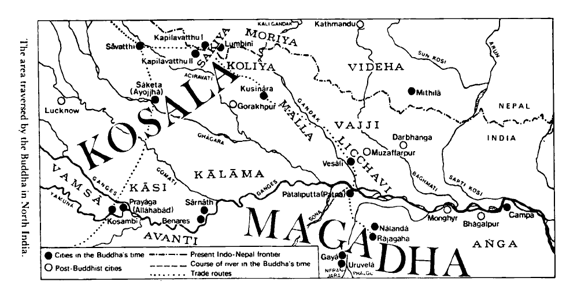

Chương I
563 - 528 trước CN
Trên sân ga thành phố Ðại Học Bắc Ấn ở Gorakhpur, ta có thể thấy ngoài số du khách Ấn Ðộ, còn có du khách từ Nhật Bản, Srilanka, Thái Lan, Miến Ðiện cũng như đám người Tây Tạng tha hương và du khách Tây phương nữa. Họ là những người chiêm bái, trên đường đi viếng nơi đức Phật đản sanh tại Lumbini (Lâm-tì-ni) và nơi Ngài diệt độ tại Kusinàrà (Câu-thi-na). Vì bình nguyên Bắc Ấn này nằm giữa vùng đồi núi Himalayas (Tuyết Sơn) và lưu vực sông Gangà (Hằng Hà) là thánh địa Phật giáo, chính tại đây đức Phật tuyên bố các Thắng Trí của Ngài, khoảng giữa năm 528 và năm 483 trước Công Nguyên, và cũng là nơi khai sinh Giáo hội Tăng già đầu tiên. Từ đây, lời dạy của bậc Ðạo Sư bắt đầu bước đường chinh phục nhiều vùng châu Á một cách hòa bình êm đẹp.
Phong cảnh này vào thời đức Phật là vùng rừng rậm, trải dài từ cao nguyên Tarai trên triền dãy Tuyết Sơn khoảng 300km xuống dần về phía nam thành một bình nguyên mang đủ hình dáng ruộng đồng và lác đác vài ngôi làng ẩn nấp dưới những đám cây mọc rải rác trong ánh mặt trời gay gắt, một vài chỗ bị gián đoạn bởi các sông ngòi chảy chầm chậm đưa những chiếc thuyền gỗ buồm xám dong ruỗi nhàn nhã. Các khu thành thị chính ở đây là Allàhabàd, Vàranasì (Benares) và Patna.
Ðó là cách sinh hoạt thông thường giữa tháng năm và tháng sáu, lúc khí hậu lên cao 400C, nhưng phong cảnh và các thị trấn lại hoàn toàn đổi khác khi gió mùa chợt bùng ra giữa tháng sáu, trước đó đã ùa đến từ vùng đông nam theo những khối mây khổng lồ đùn lên dày đặc. Rồi những trận mưa ào ào như thác dữ dội đổ xuống đất hằng giờ khiến mặt đất trở thành một cánh đầm lầy, những dòng sông trước đây hiền hòa nay tràn bờ cuồn cuộn chảy xiết.
Chẳng bao lâu sức nóng trở nên oi bức lạ thường, da con người phát nóng khô nứt nẻ và ngứa ngáy rất khó chịu. Nhưng dần dần nhiệt độ hạ xuống làm không khí từ tháng mười đến tháng ba (khoảng 150C) thật ôn hòa dễ chịu. Tháng giêng trời có thể trở rất lạnh khoảng 30C ban đêm và những thương nhân tạp hóa có dịp đem mền bông ra bán. Dần dần cột thủy ngân lại lên cao và từ tháng tư một thời kỳ nóng bức lại bắt đầu. Ánh sáng chói lọi của đám cây rừng bừng ra từ những chùm hoa đỏ như khối hồng ngọc rực rỡ. Trời càng nóng dần, các loài chim cu gáy lại càng cất tiếng hót lanh lảnh, do đó làm cho làn không khí oi bức thêm khiến con người mỏi mệt không sao ngủ được.
Môi trường và khí hậu chi phối cách sống của dân chúng như vậy, hoàn cảnh xã hội chính trị cũng không kém. Trong khi lịch sử Ấn Ðộ trước thời đức Phật bị một màn sương mù của dĩ vãng xa xưa bao phủ, thì vào thế kỷ thứ sáu, bức màn ấy được vén lên để lộ cho ta nhận ra bối cảnh chính trị trong vùng tiểu lục địa này. Các sự kiện quan trọng và các nhân vật trở nên rõ nét với những khả năng, đặc tính, ước vọng chẳng khác gì các nhân vật thời đại chúng ta xuất hiện. Và chính Kinh Ðiển Phật giáo đã truyền đạt tất cả những điều ấy cho chúng ta.
Tuy nhiên việc đó không phải nhằm mục đích ghi chép lịch sử, vì người Ấn Ðộ thời ấy không xem các biến cố chính trị là chuyện xứng đáng cho ta gìn giữ trong tâm trí. Ðối tượng của các nhà biên niên sử đạo Phật là truyền bá Chánh Pháp (Dhamma) do đức Thế Tôn tuyên thuyết trong các bài kinh của Ngài và công bố đây là con đường độc nhất dành cho những người đi tìm sự cứu độ trong tương lai.
Sau khi được truyền khẩu qua hàng thế kỷ, Kinh Ðiển ấy được ghi chép không bao lâu trước Công nguyên. Từ những lời phát biểu về nơi chốn, cơ hội, hoàn cảnh của các bài kinh Phật, và từ các Bộ Luận giải chúng, thời đại của đức Phật trở nên thật sống động đối với chúng ta.
Nếu Vệ-đà, các tác phẩm văn học tối cổ của Ấn Ðộ phản ảnh nếp sống thôn quê, thì trong Kinh Ðiển Phật giáo ta thấy cả bức tranh văn hóa thành thị. Ta cũng nghe nói đến làng mạc nông dân, nhưng đặc biệt là các thành phố tạo nên bối cảnh cho đức Phật hoằng Pháp, chúng là các tụ điểm của đời sống chính trị và thương mại phồn vinh. Nhân vật trung tâm của xã hội ấy là một vua cai trị địa phương (ràja) mà các quyết định của vị này còn tuỳ thuộc vào hội đồng và thường cũng cần phải tuỳ theo lòng trung thành đối với vị đại vương (mahàràja).
Theo Kinh Ðiển Phật giáo, toàn cảnh chính trị của vùng đồng bằng trung tâm sông Hằng trong thế kỷ thứ 6 trước CN do bốn vương quốc, một số nước cộng hòa theo chế độ tập quyền và các nhóm bộ tộc quyết định.
Phía bắc sông Hằng là vương quốc Kosala (Kiều-tát-la) hùng cường với thủ đô Sàvatthi (Xá-vệ) vào thời đức Phật, nước này được các Ðại vương liên tục trị vì, đó là Mahàkosala, Pasenadi và Vidùdabha. Ngoài Sàvatthi, các thành phố quan trọng khác của Kosala là Sàketa (hay Ayojjha), cố đô, và Varanasi (Benares, Ba-la-nại), thánh địa để chiêm bái. Ðại vương Kosala, ngoài lãnh thổ trung ương, còn ngự trị thêm hai nước cộng hòa và ba bộ tộc khác nữa.
Phía Tây nam Kosala, nằm trong góc giữa sông Hằng và sông Yamunà (Diệm-mâu-na) là tiểu quốc Vamsà (hay Vaccha) với thủ đô Kosambì (Kiều-thưởng-di) và trung tâm chiêm bái Payàga (nay là Allàhabàd). Quốc vương Vamsà là Udena, con vua Parantapa.
Tiểu quốc Avanti (sát Magadha) trải dài dưới quốc độ Vamsà và Kosala đến phía nam sông Hằng. Quốc vương Pajjota ngự trị tại thành Ujjenì, nhưng ở miền nam nước này lại có một thủ đô thứ hai là Màhissati. Xứ Avanti nằm phía ngoài khu vực được đức Phật du hành nhưng lại được đệ tử ngài là tôn giả Mahàkaccàna (Ðại-Ca-chiên-diên) giáo hóa theo đạo Phật.
Cuối cùng là vương quốc Magadha (Ma-kiệt-đà) trải dài, giáp Avanti về phía đông và sông Hằng về phía bắc. Sự phồn thịnh của xứ này phần lớn dựa vào các quặng sắt do việc khai thác mỏ không xa kinh đô Ràjagàha (Vương Xá), vừa phục vụ thương mại xuất khẩu vừa sản xuất vũ khí trong nước. Các Ðại vương Bhàti (hay Bhàtiya) và Bimbisàra (Tần-bà-sa-la kết hôn với chị của vua Pasenadi nước Kosala) liên tục ngự trị tại thành Vương Xá, còn vua Ajàtasattu (A-xà-thế) dời kinh đô từ Vương Xá đến Pàlaliputta (nay là Patna). Vương tử kế vị vua Ajàtasattu là Udàyibhadda, cũng như phụ vương mình, đã giết cha để chiếm ngai vàng và sau đó cũng cùng chung số phận ấy dưới tay con trai là Anuruddhaka.
Ngoài bốn quốc độ này, vùng Trung Nguyên còn có nhiều xứ cộng hòa, tất cả đều ở về phía đông Kosala và bắc Magadha. Các xứ này có tính cách quý tộc tập quyền, mỗi xứ đều do một vua thống trị (ràja) vừa chủ tọa hội đồng quốc gia vừa tự cầm quyền nhiếp chính những lúc hội đồng không có kỳ họp. Chỉ các thành phần giai cấp Khattiya (Sát-đế-lỵ _ quý tộc) được bầu làm quốc vương, nghĩa là các vương tước hay các chức vị trong hội đồng lãnh đạo đều dành cho người ở giai cấp này. Tuy nhiên, các giai cấp khác cũng được nghe các buổi hội nghị vì phòng hội đồng chỉ gồm một mái che trên các cột trụ mà thôi.
Các xứ cộng hòa được gọi tên theo nhóm quý tộc lãnh đạo, nhóm này chỉ là một thiểu số trong toàn dân, mà cho đến nay không lưu lại các con số rõ ràng nào cả.
Xứ cộng hòa của bộ tộc Sakiyas (hay Sakya, Sakka, Thích-ca) thủ đô là Kapilavatthu (Ca-tỳ-la-vệ) và vùng lãnh thổ cổ sơ hiện nay bị ranh giới Ấn Ðộ _ Nepal chia cắt, thời ấy tiếp giáp quốc độ Kosala về đông bắc và là một nước chư hầu của đế quốc này. Ðức Phật là một người trong giới quý tộc Thích-ca.

Khu vực được đặt chân bởi Đức Phật ở Bắc Ấn Độ
Cộng hòa Malla rất rộng có đến hai vua thống trị ở Pàvà và Kusinàrà. Kusinàrà được mô tả như một nơi chốn không quan trọng, nhưng chính nơi đây bậc Ðạo Sư đã viên tịch trong Niết-bàn Tối hậu (Parinibbàna).
Cộng hòa Licchavrì với thủ đô Vesàli (Tỳ-xá-ly) và Cộng hòa Videha (Vi-đề-ha) với thủ đô Mitthilà (Mi-thi-la) đã gia nhập vào liên bang Vajji (Bạt-kỳ), có một thời lại liên kết thêm vài bộ tộc khác nữa.
Ngoài các nước quân chủ và cộng hòa còn có các bộ tộc. Chúng ta biết rất ít về chế độ chính trị của họ, nhưng sự khác biệt giữa các cộng hòa và bộ tộc hình như là ở điểm vị cai trị bộ tộc không do dân bầu lên mà do các vị bô lão trong bộ tộc chỉ định, và vị cai trị bộ tộc ấy cũng như các bô lão đều không cần phải ở giới quý tộc Sát-đế-lỵ. Các bộ tộc quan trọng là Koliyas (Câu-ly) ở phía đông nam cộng hòa Sakiya, ranh giới của hai nước là con sông nhỏ bé Rohinì (nay là Rowai). Xưa có nhiều liên hệ hôn nhân giữa hai dòng họ Sakiyas và Koliyas này. Thủ đô của Koliyas là Ràmagàma (hay Koliyanagara).
Xa hơn nữa lại có bộ tộc Moriyas, thủ đô là Pipphalivana, vùng đất này tiếp giáp vùng đất của bộ tộc Koliya, đến mãi tận phía đông. Cuối cùng phải nói đến dòng họ Kàlamas, thủ đô là Kesaputta. Xứ sở này nằm trong góc hướng về phía tây giữa sông Ghàgra và sông Hằng.
Ðôi khi có ý kiến khác nhau giữa các vương quốc, cộng hòa, bộ tộc ấy phần lớn về quyền dẫn thủy nhập điền và đồng cỏ, nhưng thái độ chung là cùng sống hòa bình. Bất cứ ai cũng có thể tự do vượt qua biên giới chung giữa các chính thể khác nhau ấy. Ðây là toàn cảnh địa lý, khí hậu và chính trị thời đức Phật Siddhattha Gotama (Sĩ-đạt-ta Cồ-đàm) giáng sinh năm 563 trước CN.
Kapilavatthu, quê hương đức Phật, nơi ngài sống hai mươi chín năm đầu tiên trong đời, ở sát biên giới ngày nay ngăn chia nước Nepal và cộng hòa Ấn Ðộ. Phụ vương đức Phật mệnh danh Suddhodana (Tịnh Phạn)1* thuộc bộ tộc Sakiya. Bộ tộc Sakiya gồm toàn các vị Sát-đế-lỵ quý tộc vào thời ấy là thành phần giai cấp cao sang, giai cấp võ tướng hay hơn nữa là đại thần lãnh trách nhiệm cai trị và xử án tại cộng hòa Sakiya. Từ các chức vụ này, vị tân vương thống trị nước cộng hòa và đại diện toàn dân được bầu lên khi có nhu cầu. Vào khoảng giữa thế kỷ thứ sáu trước CN, vua Tịnh Phạn giữ ngôi vị Quốc trưởng.
Vua Tịnh Phạn kết hôn với hai chị em ruột từ xứ Devadaha, bà chánh hậu Màyà (Ma-gia) sau này thành mẫu thân Thái tử Siddhattha. Thứ phi ngài là Pajàpati (hay Mahàpajàpati: Ma-ha ba-xà-ba-đề) sinh hai con: hoàng nam là vương tử Nanda, chỉ sinh sau thái tử Siddhattha, anh khác mẹ vài ngày, và công chúa Nandà hay Sundarìnandà. Cả hai bà Màyà và Pajàpati đều thuộc về bộ tộc Sakiya. Kết hôn trong cùng một bộ tộc phù hợp với quy luật hôn nhân nội tộc thịnh hành thời ấy, mặc dù việc này cũng có thể bị coi thường trong trường hợp có chuyện ái tình hay món hồi môn đủ sức lôi cuốn.
Ðáng chú ý hơn, đặc biệt ở giai cấp Bà-la-môn là nguyên tắc kết hôn ngoại tộc chống việc kết hôn nội tộc, theo đó những người cùng một họ (tộc tánh) không được phép kết hôn. Tộc tánh của vua Tịnh Phạn là Gotama vì thế ngài không được phép kết hôn với một phụ nữ cùng họ. Hẳn ngài đã tuân theo tục lệ ấy và đã kết hôn với nhiều người ngoại tộc nhưng việc này không có gì chắc chắn vì tộc tánh Devadahasakka hoặc Anjana đều không được ghi trong sử. Tuy nhiên ta chỉ nhìn vào bản gia phả là thấy rõ mối liên hệ huyết thống mật thiết giữa vua Tịnh Phạn và hai bà hoàng hậu chị em này: Mẫu thân của Ngài và phụ thân của hai bà là anh em ruột, và phụ thân ngài cùng mẫu thân hai bà cũng vậy. Nói cách khác, hai hoàng hậu là hai em họ ngài.
Kapilavatthu là kinh thành quê hương của Thái tử Siddhattha, nhưng không phải nơi ngài ra đời.
Như trong Nidànakatthà (Duyên Khởi Luận), phần giới thiệu truyện Tiền Thân hay Bổn Sanh (Jàtakas) kể câu chuyện thần thoại về hoàng hậu Màyà đã bốn mươi tuổi, ngay trước thời kỳ lâm sản đã lên đường trở về quê song thân ở Devadaha để sinh con và nhờ mẫu thân Yasodharà bảo dưỡng. Cuộc hành trình bằng xe ngựa hay xe bò cọc cạch lắc lư trên những con đường đất bụi nóng bức khiến cho việc lâm sản xảy ra sớm trước khi về đến Devadaha. Gần làng Lumbini (Lâm-tỳ-ni, nay là Rumindai) giữa trời không có nhà cửa che chở, chỉ có được tàng cây sàla (tên khoa học Shorea Robusta) và cũng không có thầy thuốc nào lo việc hộ sản, hoàng tử ấu nhi Siddhattha sinh ra đời khoảng tháng năm, năm 563 trước CN.
Lumbini được các nhà khảo cổ khai quật năm 1896. Di chỉ quan trọng nhất được tìm thấy nơi ấy là một thạch trụ cao 6m5 do hoàng đế Asoka (A-dục) dựng năm 245 trước CN với lời ghi:
“Hai mươi lăm năm sau khi lên ngôi, quốc vương Devànampiya Piyadasi (Thiên Ái Thiện Kiến, tức A-dục) ngự đến đây chiêm bái, vì đức Phật Thích-ca Mâu Ni, bậc Hiền Nhân của bộ tộc Thích-Ca, đã đản sinh tại đây. Nhà vua ban lệnh khắc một tượng bằng đá và dựng một thạch trụ. Ngài miễn thuế đất ở làng Lumbini và giảm thuế hoa lợi từ 1/4 theo lệ thường xuống 1/8”.
Hơn nữa, một phiến đá có lẽ xuất hiện vào khoảng thế kỷ thứ hai sau CN được tìm ra ở Lumbini và được lưu trữ tại một ngôi chùa nhỏ địa phương. Phiến đá cho thấy hoàng hậu Màyà sinh hoàng tử trong lúc đang đứng vịn cành cây sàla. Hình như sinh con lúc đứng là một phong tục thời ấy.
Sau những cơn đau đớn của sản phụ, hoàng hậu Màyà không thể tiếp tục cuộc hành trình đến Devadaha nên đoàn tuỳ tùng ít ỏi của bà đưa bà trở về Kapilavatthu, cả người mệt lã. Niềm hân hoan vì hoàng tử ấu nhi của hoàng gia Gotama ra đời chẳng bao lâu lại bị lu mờ vì nỗi lo âu trước sức khỏe suy nhược dần của mẫu hậu. Bà trở nên yếu đuối vì cảm sốt đành phải nằm trên giường nhìn mọi việc chuẩn bị cho ngày lễ đặt tên thái tử.
Một vị hiền triết được triệu vào cung để tiên đoán vận mệnh của thái tử, đó là lão trượng Asita (A-tư-đà) một thân hữu rất được hoàng tộc Gotama quý trọng, tên vị này có nghĩa là “Bất Bạch” vừa chỉ làn da của vị ấy vừa nói lên nguồn gốc sinh trưởng từ đám dân cư ngụ ở Ấn Ðộ trước thời kỳ có dân chúng gốc Aryan. Vị hiền nhân Asita vốn là tế sư của hoàng tộc Gotama suốt bao năm qua. Trước tiên là dưới thời tiên vương Sìhahanu, phụ thân của vua Suddhodana, sau đó đến chính thời vua Suddhodana trước khi ngài lui về ẩn dật. Ngài xem xét vị hài nhi mới ra đời ba ngày và tiên đoán căn cứ vào một số thân tướng rằng đây quả là một vương tử phi thường sẽ trở thành một vị Phật và sẽ chuyển Pháp Luân (S. Nip 693). Ngài ứa nước mắt vì chính ngài sẽ không sống lâu nữa để nhìn thấy thái tử Siddhattha thành Phật, và ngài căn dặn cháu trai mình là Nàlaka nhớ rằng về sau phải làm đệ tử của đức Phật tương lai này.
Hai hôm sau, tám vị Bà-la-môn cử hành lễ đặt tên thái tử Siddhattha2*. Các vị này cũng tiên đoán nhiều việc trọng đại trong đời thái tử, hoặc sẽ thành bậc Giác Ngộ trên đường đạo giáo, hoặc làm một đại vương trong đời thế tục đầy vinh quang danh vọng. Vị trẻ nhất trong các vị Bà-la-môn này là Kondanna (Kiều-trần-như), người mà chúng ta sẽ gặp lại ba mươi năm sau.
Còn đối với hoàng hậu Màyà, lễ đặt tên hoàng tử hài nhi là phần kết thúc của đời bà. Bảy ngày sau khi sinh con, cũng như nhiều sản phụ khác trong các xứ nhiệt đới, bà lặng lẽ qua đời không than vãn.
Tuy nhiên, hoàng tử ấu nhi Siddhattha không lớn lên trong cảnh thiếu mẹ. Bà di mẫu Pajàpati của thái tử, thứ phi của vua Suddhodana, là kế mẫu thương yêu chăm sóc thái tử trong lúc chính bà cũng vừa sinh hoàng tử Nanda, em khác mẹ của thái tử Siddhattha. Chuyện còn kể rằng bà giao con mình cho một nhũ mẫu và chính bà dành hết thì giờ tận tụy săn sóc hài nhi của cố hoàng hậu, chị ruột bà.
Ða số sử gia Âu châu nghiên cứu Ấn Ðộ cho rằng năm 563 trước CN là năm sinh của đức Phật và cũng là niên đại sớm nhất được xác nhận. Niên đại ấy được tính toán cách nào và khả năng sai lạc lớn đến mức nào?
a) Vì sử sách cổ Ấn Ðộ chỉ ghi các khoảng cách giữa các sự kiện mà không ghi niên đại của các sự kiện ấy như các sử sách về sau, cho nên muốn xác định niên đại trong sử Ấn Ðộ cần phải thỉnh cầu đến các sử gia Hy lạp. Các quan hệ Ấn - Hy phát triển là do kết quả chiến dịch Ấn Ðộ của Ðại Ðế Alexander (327 trước CN). Vào khoảng năm 303 trước CN, Hoàng đế Ấn Ðộ Candragupta Maurya (hay Candagutta Moriya, triều Khổng Tước) đạt được một thỏa hiệp về lãnh thổ và mở màn quan hệ ngoại giao với vị cựu đại tướng của vua Alexander là Seleukos Nikator hiện thời cai trị thành Babylonia. Qua các báo cáo của sứ thần Hy lạp là Megasthenes được bổ nhiệm đến thủ đô Pàtaliputta (Patna ngày nay), vua Candragupta dần dần được các sử gia Hy Lạp biết rõ qua danh hiệu Sandrokottos trong tiếng Hy lạp, và nhờ các sử gia này, chúng ta có thể tính niên đại ngài lên ngôi vào năm 321 trước CN.
-Niên đại này còn cho chúng ta xác định các niên đại của chuỗi sự kiện liên tục được liệt kê trong sách sử ký tiếng Singhala là Dìpavamsa (Ðảo Sử) và Mahavamsa (Ðại Sử) khoảng thế kỷ thứ tư đến thứ sáu CN. Theo các sách này, (Dv5.100; Mhv 5.18), vua Candragupta trị vì hai mươi bốn năm (đến 297), hoàng nam kế vị ngài là Bindusàra (Tần-đầu-sa-la) trị vì hai mươi tám năm (đến 269), tiếp đó là khoảng bốn năm trước khi Asoka, con vua Bindusàra, lên ngôi bằng cách tiêu diệt tất cả hoàng gia huynh đệ và tự làm lễ quán đảnh phong vương (Dv 6.21; Mhv. 5.22). Như vậy biến cố này có lẽ đã xảy ra vào năm 265 trước CN.
Ta có thể nhìn lui về ngày đức Phật đản sanh dựa vào lời xác nhận trong cả hai sách sử ký này (Dv 6.1; Mhv 5.21) rằng vua Asoka lên ngôi hai trăm mười tám (218) năm sau khi đức Phật diệt độ (Bát Niết-bàn). Sự kiện này do vậy được ghi vào năm 483 trước CN. Và vì Bậc Ðạo Sư sống đến tám mươi tuổi, năm đản sinh của ngài nhằm vào năm 563 trước CN.
Mặc dù con số hai trăm mười tám năm giữa thời đức Phật diệt độ và vua Asoka tức vị được xem là đáng tin cậy, cách tính toán này cũng có nhiều nhược điểm. Về một phương diện, các năm trị vì của vua chúa thường được làm tròn cho chẵn số, và một phương diện khác, ta không nên bỏ qua sự kiện là trong sách Purànas (Chuyện Cổ Nhân) cho rằng vua Bindusàra chỉ trị vì khoảng hai mươi lăm năm. Như vậy cách tính toán dựa trên các sử ký cần được kiểm tra lại từ nhiều nguồn khác nữa.
b) -Một nguồn thông tin khác do các sắc dụ của hoàng đế Asoka cung cấp, các sắc dụ này được hoàng đế Devànampiya Piyadasi (Thiên Ái Thiện Kiến, tức A-dục) truyền khắc lên đá và đặc biệt truyền dựng thạch trụ khắp đế quốc vĩ đại của ngài. Sắc dụ trên thạch trụ số XIII, ghi ngày chinh phục đẫm máu nước Kalinga (Orissa) của vua Asoka tám năm sau khi ngài đăng quang, và trụ này có lẽ được xây dựng mười hai năm sau biến cố ấy, nêu danh tánh năm vị vua không phải người Ấn Ðộ mà hoàng đế Asoka đã tiếp kiến, đó là: Antiochus II của nước Syria, Ptolemy II của Ai Cập, Antigonus của Macedonia, Magas của Cyrene và Alexander của Epirus. Niên đại của các vua này đều được biết rõ, và năm gần nhất các vua này vẫn còn sống là 258, như vậy đó cũng có thể là năm gần nhất của sắc dụ này. Tính lùi lại mười hai năm sau ngày vua Asoka lên ngôi, cọng thêm 218 năm được nêu trong các sử ký, ta đạt con số 488 trước CN dành cho năm đức Phật tịch diệt và năm 568 dành cho năm đản sanh của đức Phật.
Một điểm sai lạc có thể thấy ở đây nằm trong khoảng thời gian giữa năm đăng quang của hoàng đế Asoka và năm ban hành sắc dụ, khoảng ấy có thể hơi ít hơn mười hai năm.
c) Các sử gia Trung Hoa cũng hỗ trợ một phần qua sách “Ðiểm Sử Ký” của Quảng Châu, sách này trình bày rõ mỗi điểm tượng trưng một năm sau thời đức Phật diệt độ. Xuống đến năm 489 CN, sách này nêu ra 975 điểm, tức là đặt thời đức Phật diệt độ vào năm 486, và đản sanh vào năm 566 trước CN. Dầu tính cách chính xác trong sử sách của người Trung Hoa đáng tin cậy đến đâu chăng nữa, thì cũng không phải là không có sai lầm, nhất là vì đạo Phật đến Trung Quốc khá trễ và các sử gia Trung Hoa đã không khởi công viết sử ký ngay khi bậc Ðạo Sư Ấn Ðộ tịch diệt.
d) Ta cũng có thể xem xét truyền thống Kỳ-na giáo. Vị tổ sáng lập đạo này là Jina (Thắng giả) hay Mahàvira (Ðại Hùng), người đồng thời với đức Phật, sống đến bảy mươi hai tuổi và được Kinh Ðiển Phật giáo nhắc đến qua danh hiệu Nigantha Nàtaputta( Ni-kiền-đà Nhã-đề-tử).
Các học giả Âu Châu thường ghi đạo sư Mahàvira mất năm 476 trước CN theo lời tuyên bố của Hema Candra, một tu sĩ Kỳ-na (thế kỷ 12 sau CN) rằng sự kiện vua Candragupta Maurya lên ngôi (năm 321 trước CN) xảy ra cách 155 năm sau khi tổ sư Mahàvira tịch diệt (Nirvàna). Nhưng các học giả đạo Kỳ-na lại tranh luận sự chính xác của con số này và nêu ra điểm sai lầm đã được thừa nhận của Hema Candra và nhiều đoạn trong kinh điển Kỳ-na đã đặt con số 215 năm giữa cuộc chinh phục vương quốc Avanti của vua Candragupta (312 trước CN) và sự từ trần của tổ sư Mahàvira. Cách tính này sẽ đặt sự kiện tổ Mahàvira tịch vào năm 527 trước CN. Năm này được xem là khởi điểm của biên niên sử đạo Kỳ-na (sử này chỉ mới được khai sinh sau CN).
-Việc cố tìm cách suy diễn năm tịch diệt của đức Phật từ năm tạ thế của tổ Mahàvira càng gặp khó khăn hơn vì ta không có những lời minh xác nào về biên niên sử nêu mối liên hệ giữa hai sự kiện này cả. Mặc dù có một câu kinh Kỳ-na tuyên bố rằng tổ Mahàvìra sống lâu hơn đức Phật bảy năm, (như vậy nếu ta ghi tổ Mahàvìra tịch năm 476 thì phải xác nhận đức Phật diệt độ năm 483 trước CN), nhiều đệ tử đạo Kỳ-na đồng ý với các môn đồ Phật giáo rằng tổ Mahàvìra từ trần trước đức Phật. Ba lần trong kinh tạng Pàli (DN 29.23*, DN 33.1 4** -, MN 104.15*** -) miêu tả quang cảnh đức Phật nghe nói tổ Mahàvìra đã tịch, và các kinh điển ấy thường chứng tỏ rằng đức Phật Gotama là vị đạo sư trẻ tuổi nhất trong các đạo sư thời ấy.
Những người Tây phương viết lịch sử đức Phật giả thiết rằng bậc Ðạo Sư tịch diệt hai năm sau Tổ Mahàvìra, song chứng cớ việc này rất ít. Nếu chúng ta phải chấp nhận hai năm là một giả thiết có giá trị, ta phải đi đến chấp nhận hoặc năm 474 (theo các học giả Tây phương), hoặc năm 525 trước CN (theo truyền thống Kỳ-na giáo) là năm đức Phật tịch diệt, và năm ngài đản sinh là trước đó tám mươi năm trong cả hai trường hợp trên.
e) Biên niên sử thường được chấp nhận hiện nay ở khắp Á châu lại càng ít được tín nhiệm hơn nữa, theo đó đức Phật diệt độ năm 544 và đản sinh năm 624 trước CN. Nhưng Phật lịch (B.E) chỉ mới xuất hiện vào thế kỷ 11 CN. Do đó về sau hoặc là niên đại ghi thời bậc Ðạo Sư tịch diệt đã bị nhầm lẫn với niên đại đản sanh, hoặc có lẽ các Tăng sĩ đã dùng chu kỳ 60 năm trong cách tính toán, nên đã tính lầm cả một chu kỳ. Cách này đặt các niên đại của đức Phật vào 564 - 484 trước CN. Song giả thiết về sự nhầm lẫn như thế dĩ nhiên không có bằng cớ.
Vậy con số nào trong các niên đại tính theo các phương pháp trên được xem là có lẽ đúng nhất về mặt lịch sử? Ta có thể loại bỏ các niên đại dựa trên truyền thống đạo Kỳ-na hoặc đạo Phật _ chúng chỉ mới được tính toán rất lâu về sau, nên không đủ sức chống đỡ sự phê bình theo quan điểm lịch sử.
Về phương diện khác, các niên đại suy diễn từ sử ký Trung Hoa hay Singhala, và các sắc dụ Asoka đều có căn bản vững chắc và chỉ khác nhau ở mức tối thiểu, vì thế theo chúng, năm đản sinh đức Phật chỉ xê xích từ 568 đến 544 trước CN. Niên đại 563 được sử ký Tích Lan yểm trợ, cũng có giá trị không chỉ vì nó đứng giữa mà còn được hai cách tính toán khá phức tạp hơn nữa yểm trợ, dựa trên các bản liệt kê danh sách quốc vương Nam Ấn Ðộ và Singhala, cùng niên đại nước Tích Lan được cải hóa theo đạo Phật, mà còn dựa vào các bảng tham khảo lẻ tẻ về một hệ thống niên đại tối cổ đã bị thất lạc chỉ còn lưu lại vài phần, hệ thống này căn cứ vào năm 483 là năm đức Phật diệt độ.
Như vậy ta được biện minh về cách đặt niên đại đức Phật đản sanh vào năm 563 theo sử ký, tuy thế, lại chấp nhận trên căn bản các chứng cứ lịch sử khác, có thể nhầm lẫn từ cộng năm đến trừ chín năm. Xác suất về một niên đại sớm hơn lại cao hơn một chút vì có được cả hai phương pháp (b) và (c) hỗ trợ, trong khi một niên đại muộn hơn chỉ được một phương pháp (d) hỗ trợ mà thôi.
-----------------------------------
* Tịnh Phạn: Người trồng lúa sạch.
* Siddhattha: Người toại nguyện (d.g)
* Trường Bộ số 29: Kinh Thanh Tịnh
** số 33: Kinh Phúng Tụng
*** Trung Bộ số 104: Kinh Làng Sama (dg).
Nếu thời niên thiếu, hoàng tử Siddhattha nhìn ra phương bắc, chàng thường thấy rặng núi trùng điệp nhấp nhô đến tận chân trời. Theo chàng biết, nơi này chỉ xa khoảng tám yojana: do-tuần (80km) nhưng rất khó đến, vì thành Kapilavatthu bị ngăn cách rặng núi bằng một dãi lau sậy và rừng rậm đầy hổ báo, voi, tê giác lai vãng và nhiều người liều lĩnh băng qua rừng rậm này đều chết vì sốt rét. Song nếu ta vượt qua chướng ngại này thì mặt đất lại bằng phẳng lên cao dần và ta đến vùng đồi cỏ cây thưa thớt. Phía sau các chân đồi (nay là Sivalik hay Churia) là một thung lũng xanh tươi và tiếp đó nữa lại là rặng núi Mahàbhàrata, từ thành Kapilavatthu ta có thể thấy được vài đỉnh núi này. Sau rạng núi tục truyền còn nhiều núi cao hơn nữa, đó là dãy Himavat hay Himàlayas (Tuyết Sơn) với các đỉnh tuyết hùng vĩ cao ngất tận trời xanh, đó là nơi tận cùng xứ Jambudìpa (Diêm-phù-đề) hay lục địa Hồng Ðào này vậy.
Quang cảnh hướng về đông ít trở ngại hơn. Phía ấy có thôn làng Lumbini là nơi chính thái tử Siddhattha đã ra đời dưới một gốc cây và xa hơn nữa là Devadaha, nơi mẫu hậu Màyà mà chàng chưa từng biết và kế mẫu Pajàpati đã sinh trưởng, và đó cũng là nơi ngoại tổ Anjana đã sống. Từ Devadaha ta có thể đi vài ngày đường về hướng mặt trời mọc, song rồi lại gặp rừng rậm và hoàn cảnh trở nên nguy hiểm. Tại đó các thổ dân da đen lai vãng săn bắn và nói thứ ngôn ngữ không ai hiểu được.
Cảnh về phía tây lại hoàn toàn khác. Phía ấy có con đường cái đưa đến các thành Setavyà và Sàvatthi và miền xa hơn nữa, tại Sàvatthi có vị đại vương mà phụ vương Suddhodana thường nói đến, khi yết kiến vị đại vương này, ta phải chấp hai tay lại, cúi đầu đảnh lễ (añjali) thật cung kính. Ðại vương ấy có quân hùng tướng mạnh, đôi khi vài đội binh chủng của họ kéo đến thành Kapilavatthu đều được tiếp đón trọng thể.
Ta có thể du hành bình an đến thành Sàvatthi: quân đội nhà vua canh phòng cẩn mật để các đoàn lữ hành bằng xe bò mang đủ loại hàng hóa qua lại không bị bọn đạo tặc quấy phá. Thường các đoàn xe từ Sàvatthi đi qua ít khi dừng lại ở Kapilavatthu, mà tiếp tục đi về hướng đông nam đến Kusinàrà và Vesàli, cuối cùng vượt qua sông Hằng đến Pataligàma và tiếp tục đi đến Ràjagaha, nơi đó lại có một đại vương khác ngự trị.
Thái tử từng nghe nói nếu ai muốn, có thể lên thuyền ở Pàtaligàma và dong buồm đi vài ngày nữa lên thượng lưu sông Hằng đến Vàrànasi (Benares) và Payàga (Allàhabad). Khi lớn khôn, chàng sẽ du ngoạn các nơi ấy và nhiều thành phố khác nữa để về kể chuyện cho dân chúng nghe. Nhưng hễ khi nào chàng phát họa các chương trình nầy với Phụ vương, vua Suddhodana đều cười xoà và lắc đầu, bảo rằng một vị Thích-ca không được phép phiêu bạt giang hồ như một khất sĩ xuất gia (paribbàjaka), một kẻ chăn bò hoặc thương nhân, mà ở vị trí một nông gia Sát-đế-lỵ, chàng phải canh tác ruộng đất, luyện tập nghề binh khí, để một ngày kia được bầu lên làm vua cai trị như chính phụ vương vậy.
Rồi Phụ vương chàng thường chỉ ra các đồng ruộng chung quanh với các bụi cây Sàla sừng sững, và phía kinh thành Kapilavatthu vươn lên dưới ánh mặt trời với “hoàng cung” cùng các ngôi nhà tranh vách đất hay các chòi tre nứa trong làn không khí lung linh nắng nhạt.
-Khung cảnh ngày nay tương ứng với thành Kapilavatthu ngày xưa ra sao vẫn còn là vấn đề được các nhà khảo cổ học bàn luận. Nhà chiêm bái Trung hoa Fa-hsien (Pháp Hiển) đến hành hương các Phật tích Ấn Ðộ khoảng giữa năm 399 và 414 CN, đã phát biểu những lời dường như muốn chỉ rõ các di tích ở cạnh vùng Pipràvà ngày nay trên đất Ấn, cách phía nam Lumbini 12 km. Vị đồng hương của ngài là Hsuan-tsang (Huyền Trang) đi chiêm bái Phật quốc vài thế kỷ sau (629 - 645) để tìm hiểu Thánh điển, cũng cho biết các khoảng cách và lời hướng dẫn chỉ đường đến di tích ở Tilaurakot trong vương quốc Nepal, cách tây bắc Lumbini 24 km. Biên giới Ấn Ðộ -- Nepal nằm giữa hai địa điểm này, chúng cách nhau 16 km nhưng phong cảnh giống nhau.
Cuộc tranh luận về quê hương đức Phật không hoàn toàn thoát khỏi những thành kiến của mỗi dân tộc. Các học giả Nepal bênh vực vùng Tilaurakot nhấn mạnh phạm vi của di tích này, và sự hiện diện của một bức thành cổ với hào lũy bao bọc Tilaurakot: đó là những đặc điểm mà chỉ kinh thành vua chúa ngày xưa mới có được. Họ nêu lên rằng Tilaurakot, cũng như Kapilavatthu trong Kinh Ðiển Phật giáo, nằm trên bờ sông mà lòng sông này đã chuyển đi 400m về phía tây bắc.
Ðể nhấn mạnh lời tuyên bố họ làm chủ vùng Kapilavatthu lịch sử này, năm 1961 chính phủ Nepal “đổi tên” Tilaurakot và toàn thể vùng lân cận thành Kapilavastu (tên chữ Sanskrit của Kapilavatthu), để cho vùng này mang tên ấy trên các bản đồ gần đây.
Mặt khác các nhà khảo cổ Ấn Ðộ chủ trương rằng Kapilavatthu giống hệt vùng Pipràvà của Ấn, đã đặt lời công bố chủ quyền dựa trên các khám phá sau đây.
- Năm 1898, trong một ngôi tháp bằng gạch gần Pipràvà, năm cái bình được phát hiện, một cái được miêu tả theo lời ghi bằng thứ chữ Bràhmì trong ngôn ngữ Màgadhì là chiếc bình đựng xá lợi đức Phật Thế Tôn của bộ tộc Sakiya. Chiếc bình này đựng tro và một số vật cúng dường rất nhỏ.
- Năm 1972, dưới tháp này, lại tìm thấy một ngôi tháp còn cổ hơn nữa, được đánh giá vào thế kỷ thứ năm trước CN, cùng với hai chiếc bình chứa khoảng mười hay mười hai khúc xương (của đức Phật?).
- Năm 1973, tháng 4, trong một di tích tu viện xây khoảng thế kỷ 1 hoặc 2 CN, tại Pipràvà, lại tìm thấy nhiều tấm bia bằng gạch nung mang nhiều lời ghi chú khác nhau nói đến “ngôi tinh xá ở Kapilavatthu” hoặc ở “Ðại Kapilavatthu “và một chiếc nắp bình tại đó cũng mang những lời tương tự.
- Năm 1976, tháng 6, cuối cùng, ở cách tây nam Pipràvà khoảng một ki-lô-mét tại một nơi tên là Ganwaria, lại khám phá ra di tích của một quần thể kiến trúc thời xưa được suy diễn ra là “hoàng cung” của vua bộ tộc Sakiya.
Mặc dù chiếc bình có ghi chữ ở Pipràvà được tìm thấy năm 1898 là một chiếc bình bằng đá láng Steatite cao 153 mm với chiếc nắp cũng được khắc chữ, quả thật ra vẻ đựng tro xá lợi Phật, các khám phá khác ở Pipràvà và Ganwaria lại rõ ràng không chứng minh được Pipràvà chính là quê hương đức Phật. Có lẽ chúng ta cần phân biệt cổ thành Kapilavatthu, bối cảnh thiếu thời của thái tử Siddhattha và tân thành Kapilavatthu. Vì xưa kia vua Vidùdabha nước Kosala chiến thắng bộ tộc Sakiya thời đức Phật tại thế và tiêu diệt cổ thành Kapilavatthu (tức Tilaurakot), nên có lẽ đám người Sakiya sống sót di tản từ cổ thành về sau lập nghiệp tại vùng Pipràvà ngày nay và xây dựng Tân thành Kapilavatthu (hay Ðại Kapilavatthu), nơi đây họ đã tôn thờ xá lợi Phật sau khi ngài diệt độ.-
Ðịa điểm chính xác về quê hương thái tử Siddhattha chỉ còn cách phải chờ đợi từ các cuộc khai quật tương lai. Ðặc biệt là vùng Tilaurakot cần được điều tra thấu đáo hơn nữa -- ngành khảo cổ bằng máy bay có thể sẽ cung cấp nhiều di chỉ quan trọng, song ngành này từ trước đến nay vẫn chưa thí nghiệm việc ấy.
Chúng ta đã biết rõ về cơ cấu chánh trị của cộng hòa Sakiya được ban ra từ thành Kapilavatthu. Khi hai hoàng tử Siddhattha và Nanda ra đời, phụ vương Suddhodana như đã nói trên, là vị quốc trưởng được bầu lên đang cai trị lãnh thổ này. Ngài cầm quyền bao lâu thì không được biết, nhưng rõ ràng ngài đã giữ chức vụ ấy trong hàng chục năm. Khi thái tử Siddhattha trở về thăm quê hương vào tuổi ba mươi sáu, phụ vương ngài vẫn cầm quyền. Vì quốc trưởng được bầu lên từ giới quí tộc võ tướng hay triều thần, có thể những cuộc bầu cử ấy không diễn ra ở các khoảng thời gian cố định, mà do nhu cầu, hoặc là vì quốc vương già yếu không đảm trách nhiệm vụ đầy đủ, hoặc vì Ðại vương Kosala, vị chúa tể của cộng hòa Sakiya muốn đưa người mới lên thay.
Hiển nhiên là vị quốc vương một khi được bầu cử rồi, chỉ có thể cầm quyền nếu được Ðại vương Kosala chấp thuận. Như vậy quốc vương Sakiya bao giờ cũng là người thân tín của đại vương Kosala -- đó là một yếu tố mở ra nhiều cửa thuận lợi cho các hoàng tử và về sau còn giữ vị trí quan trọng trong sự nghiệp hoằng Pháp viên mãn của thái tử Siddhattha.
Khác với cộng hòa Licchavi có cả ba quốc vương cùng cai trị, vua Suddhodana cai trị chỉ một mình, nhưng không giữ độc quyền quyết định, vì mọi vấn đề quan trọng đều được bàn luận ở hội đồng của nước cộng hòa. Các kỳ họp trong phòng hội đồng vốn được mở ra mọi phía nên mọi tầng lớp xã hội đều có thể nghe được, mặc dù chỉ các nam nhân quý tộc được quyền phát biểu và giữ vai trò tích cực trong việc quyết định quốc sự. Do vậy các vị ấy được gọi là các nhà cai trị (ràjana).
Ở Ấn Ðộ cổ đại không có việc bầu phiếu vì dân chúng chưa hề nghĩ đến việc một nhóm đa số với quyền ưu tiên do đông người có thể bắt buộc một nhóm thiểu số gồm nhiều ý kiến khác nhau phải tuân theo một quyết định nào đó. Cuộc họp chỉ kéo dài cho đến khi nào phe đối lập được thuyết phục hoặc do quá mệt mỏi nên đã nhượng bộ và đi đến thỏa hiệp. Ðể đạt được sự thống nhất ý kiến như vậy, vị quốc vương chủ tọa hội đồng phải có khả năng đàm luận và tài thuyết phục hùng hồn. Ðó là các đặc tính mà chắc hẳn vua Suddhodana đã đạt đến cao độ và thái tử Siddhattha thừa hưởng về sau.
Ta có thể hình dung được vùng đất do vua Suddhodana cai trị theo lời nhà chiêm bái Trung Hoa Huyền Trang. Ngài cho ta biết vùng lãnh thổ Sakiya có chu vi 4.000 lý (khoảng 1880 km) và gồm mười thành phố mà nhà du hành ở thế kỷ thứ bảy này thấy đã đổ nát hoang tàn. Ngài bảo kinh thành Kapilavatthu được một bức thành bảo vệ, vẫn còn thấy rõ các nền bằng gạch của nó dài khoảng 15 lý (bảy ki-lô-mét). Rõ ràng mười thành phố này phần lớn trùng hợp với chín thành phố được mô tả trong Kinh Ðiển Phật giáo như các đô thị bộ tộc Sakiya: Ngoài kinh thành Kapilavatthu, là Devadaha, Càtumà, Sàmagàma, Khomadussa, Silàvati, Medatalumpa, Ulumpa và Sakkàra. Có lẽ đó là các thủ phủ địa phương, mỗi nơi là một thị trấn, trung tâm thương mại của nhiều làng xã.
Những lời xác nhận của ngài Huyền Trang ít ra cũng khiến ta có thể kết luận một cách khái quát về lãnh thổ và dân chúng của cộng hòa Sakiya. Vùng đất này có lẽ rộng khoảng 2000 km2, phần lớn gồm rừng rậm và không được canh tác. Nếu ta giả thiết đối với vùng đất phì nhiêu ở trung ương bình nguyên Tarai và tính thấp hơn so với con số khá cao hiện nay, mật độ trung bình 90 người trên 1km2, ta sẽ có tổng số 180.000 dân trong đó 8000 người sống ở thành Kapilavatthu và 4000 người sống ở một trong tám hay chín thị trấn kia. Như vậy, khoảng 40.000 cư dân cộng hòa Sakiya là dân thành- thị, và phần còn lại 140.000 là dân thôn quê. Giới quý tộc- võ tướng có lẽ khoảng 10.000 người hầu hết sống ở đô thị, nhưng cũng như đa số dân chúng, họ đều làm nghề nông.
Trong các phận sự của quốc vương thì việc thu thuế là việc không được dân chúng ưa thích chút nào và mức độ thâu thuế cũng không được biết rõ. Dân quê thường trao đổi hàng hóa lẫn nhau, hầu như không biết đến tiền, nên phải đóng góp bằng sản phẩm, phần lớn là lúa, cho những người thu thuế đặc biệt phải có sẵn kho chứa và đem lên thành thị bán lại. Thuế đánh vào nông dân tùy thuộc kết quả thu hoạch, việc ấy do người đánh thuế qui định. Thời ấy chưa có nguyên tắc thâu thuế như ở Ấn Ðộ sau này, theo đó mọi đất đai đều thuộc vào nhà vua, vua thâu tiền thuê ruộng đất từ người sử dụng chúng.
Khi hoàn cảnh cho phép, thuế được thâu bằng tiền chứ không phải nông sản. Vì thời ấy chưa có thứ đồng tiền đánh dấu nhà nước nên hệ thống tiền tệ gồm các thỏi đồng hay bạc hình vuông trị giá theo cách chia nhỏ đồng tiền Kahàpana. Một con bò sữa giá từ 8 đến 12 đồng Kahàpana.
Ðồng tiền Kahàpana được chia ra 4 pàda = 20 màssakas. Các số tiền nhỏ hơn được tính bằng vỏ ốc đánh bóng rực rỡ. Những đồng tiền này mang dấu hiệu của một vị chủ ngân khố tư nhân phát hành, bảo đảm đúng cân nặng và cam kết trả lại theo giá trị thật bằng hàng hóa. Vị này cũng làm thêm việc của người cho vay. Nên không lạ gì các nhà tài phú tích trữ tiền bạc trở thành những người thế lực nhất trong xã hội.
Ta không biết rõ vua Suddhodana phải trả phần thuế bao nhiêu cho vị chúa tể ở Sàvatthi là Ðại vương Kosala. Vì thuế lợi tức thay đổi theo mùa gặt, nên có lẽ đó không phải là số tiền cố định. Cũng có thể Ðại vương Kosala đã hài lòng với những món cống vật mà thỉnh thoảng cộng hòa Sakiya gửi tặng như một dấu hiệu phục tùng.
Các phận sự khác của quốc vương gồm các việc công cộng như xây đường sá, trạm xe, làm thùng đựng nước đắp đập và đào giếng. Vì không ai xung phong làm những công tác này, nên những người có thể lực cường tráng, nhất là các tay thợ lành nghề đầy đủ kỹ năng bị buộc phải cống hiến sức lao động cho vua (Ràjakariya). Những công tác này được các kỹ sư đặt kế hoạch và điều khiển, họ được vua trả lương lấy từ tiền thuế. Những công việc xây dựng công viên, đắp đập, làm thùng đựng nước... được đức Phật liệt kê vào danh sách các công đức thiện sự đưa đến tái sanh vào cõi lành. (SN1. 5. 7)6*
-Ngoài các công việc nội bộ, vua Suddhodana còn bận rộn trong lãnh vực ngoại giao ở hai mặt. Ðặc biệt ngài phải duy trì mối quan hệ với Ðại vương nước Kosala ở Sàvatthi, vị chúa tể của toàn cộng hòa Sakiya. Ngài cần phải giữ gìn thiện ý và sự tín nhiệm của vị đại vương này đối với một tiểu quốc cộng hòa, đồng thời phải giữ một khoảng cách vừa đủ để bảo tồn một phần độc lập cho nước cộng hòa an hưởng. Vua Suddhodana hẳn thường đi công du đến Sàvatthi để dự các phiên họp giữa các quốc vương.
Trong khi chính sách quốc gia của nước Kosala, việc chấm dứt các liên minh và gây chiến đều ở trong tay vị đại vương này, các quốc vương cộng hòa và bộ tộc chỉ còn trông cậy vào “chính sách láng giềng tốt”. Ðây là ngành hoạt động ngoại giao thứ hai của vua Suddhodana. Mục đích là đi đến các thỏa hiệp với các lân bang kế cận mà không phải hy sinh các quyền lợi căn bản quốc gia. Các vấn đề thông thường nhất là việc điều hành cánh đồng chăn nuôi và dẫn thủy nhập điền dọc theo các biên giới. Tài nghệ của vị quốc vương được thi thố qua khả năng đem lại những giải pháp thỏa đáng cho cả đôi bên.
Chiến sự không phải là phận sự của quốc vương. Ngài phải duy trì hòa bình, nhưng nếu ngài thất bại trong việc này, và chiến tranh bùng nổ thì việc binh đao sẽ do vị đại tướng quân sự (senàpati) điều khiển, vị này giữ chức vụ độc lập đối với quốc vương. Trong quốc độ Kosala, tất cả tướng lãnh điều khiển các lực lượng trọng tâm cũng như các tướng lãnh của các cộng hòa và bộ tộc đều đặt dưới quyền điều khiển trực tiếp của đại vương.
Nhờ cách này, đại vương ngăn cản các vua chư hầu phối hợp với các đại tướng của họ để cầm quyền chính trị bằng vũ lực trong nước mình.
Ðối với các quốc vương, sự phân quyền chính trị và quân sự có hai mặt. Về một mặt, họ biết rằng vị đại vương, qua cá nhân vị đại tướng, có sẵn sàng phương tiện khống chế họ để buộc họ tuân theo lệnh trên. Mặt khác, họ cũng được bảo vệ khỏi bị âm mưu nổi loạn từ phía vị đại tướng, bởi vì đại vương không bao giờ dung thứ sự phế truất quốc vương mà ngài đã bổ nhiệm và sự tiếm quyền chính trị của đại tướng.
Một lãnh vực hoạt động khác của vua Suddhodana là lãnh vực công lý, bao gồm các hành vi dân sự quan trọng và các tội phạm. Chúng ta không biết chính xác bao nhiêu phạm nhân bị bắt giữ và tòa án diễn ra theo hình thức gì ở bộ tộc Sakiya, nhưng có thể rút ra kết luận từ các cộng hòa Koliya, Malla tiếp giáp cộng hòa Sakiya ở phía đông nam. Các xứ này có lực lượng trị an với các nhân viên canh phòng vừa nổi bật qua cách để râu tóc đặt biệt vừa khét tiếng tàn bạo độc tài và tham nhũng.
Tiến trình pháp luật giữa bộ tộc Sakiya có lẽ hơi khác thủ tục của liên bang Vajji. Tại đây, căn bản quyền phán xét là một bộ luật (thành văn?), có lẽ bao gồm các phương châm hoặc quyết định về các vụ tố tụng điển hình. Các chuyên gia luật pháp tham dự mọi phiên xử và bảo đảm việc xét xử theo đúng bộ luật này. Quyền lợi của hai phe hoặc của bị cáo được các luật sư biện hộ hoặc hội đồng bảo vệ chăm lo, và vụ án được một hay nhiều phán quan quyết định. Ðơn kháng án được giao cho quốc hội, đại tướng, phó vương (vị này hình như không có mặt trong bộ tộc Sakiya) và quốc vương. Ta có thể phỏng đoán là mọi việc diễn tiến trong một kỳ họp duy nhất, và quốc vương với vị trí lãnh đạo tối cao ở quốc nội, tuyên bố phán quyết tối hậu. Song quốc vương không có quyền tuyên án tử hình: việc này chỉ dành riêng cho đại vương ở thành Savatthi mà thôi.
Chuyện các vương tử của vua Suddhodana thừa hưởng địa vị đặc biệt trong thành Kapilavatthu nhờ vương quyền thân phụ là điều hiển nhiên không cần bàn đến. Trong khi đa số quần chúng sống trong nhà tranh vách đất hay lều tre nứa lau sậy, còn ở các vùng thấp của kinh thành, nhà dựng trên cọc tre để tránh nạn lũ lụt theo gió mùa và chuột rắn bò cạp xâm nhập, thì các vương tử sống trong nhà của vua cha, mà vì nhà gồm có nhiều tầng nên gọi là “Hoàng cung”. Cung vua hẳn được xây bằng gạch trên một khoảng đất hơi cao và có tường đất bao quanh chứng tỏ đấy là vùng cấm địa được phòng vệ của riêng quốc vương. Gần đó là ao sen đủ màu xanh đỏ trắng.
-Trong tư thất của vua Suddhodana, sự thay đổi thời tiết theo ba mùa đông, hạ, mưa ở Ấn Ðộ đều được đáp ứng bằng cách đổi chỗ ngủ: mùa hạ thường ngủ trên sân thượng có mái che. Ngay cả số cung nhân thị nữ cũng sống khá sung túc. Thay vì ăn cơm tấm hay cháo gạo như gia nhân thông thường, họ được dùng gạo nguyên và cả thịt nữa (A.N. 3.38)7* .
Giữa đám thanh thiếu niên thành Kapilavatthu, hoàng tử Siddhattha trông nổi bật vì chàng được chăm sóc chu đáo hơn và ăn mặc sang trọng chỉnh tề hơn các trẻ khác. Y phục của thái tử toàn bằng tơ lụa Ba-la-nại và ít ra là trong thuở thơ ấu lúc nào chàng cũng được một nhũ mẫu và đám cung nhân vây quanh hầu hạ. Theo lời thái tử, chàng “rất mực được nuông chìu, hết sức được nuông chìu”.
Kinh Ðiển Pàli (D.N. 1.14)8* liệt kê cả loạt trò chơi của trẻ con cổ Ấn Ðộ. Chúng ta có thể hình dung được thái tử thiếu niên Siddhattha cùng chơi với hoàng đệ Nanda trò đấu trên tấm ván chia tám hay mười ô vuông (cờ tướng? cờ vua?) hoặc cùng đám trẻ khác nhảy qua các ô vuông vẽ trên mặt đất. Các trò chơi khác thường được ưa chuộng là: người bù nhìn, đấu gậy, và chơi các loại cày cuốc, xe ngựa, cung tên tí hon. Ðám trẻ lớn hơn có thể thích thú đoán ý tưởng người khác và nhận ra các chữ viết tay quơ cào trên không hoặc ngay trên lưng người phỏng đoán: dĩ nhiên điều này có nghĩa là người chơi trò này phải biết đọc.
Thái tử Siddhattha có biết đọc hay không, điều này không được chắc chắn. Một truyền thuyết về sau quả có kể chuyện thái tử làm kinh ngạc thầy giáo của mình vì cách thái tử học thông thạo các mẫu tự Ấn Ðộ rất dễ dàng, nhưng thực ra trong Kinh Ðiển Pàli không có dấu hiệu nào cho thấy đức Phật đã từng biết đọc biết viết cả. Vào thời ngài, biết đọc được xem là một kỹ năng hữu ích, nhưng đó không phải là một thành phần của nền giáo dục sơ đẳng. Ðặc biệt điều ấy chính là trường hợp này vì lẽ ngày xưa thiếu vật liệu để viết và cũng không có sách được viết sẵn, các tài liệu được viết duy nhất là các cáo thị hay bản thỏa hiệp khắc lên gỗ, đá. Viết chữ, hay đúng hơn là khắc hay vẽ chữ (lekhà) được xem là một nghệ thuật hầu như bao giờ cũng phải thực hành với tính cách chuyên nghiệp. Thái độ của thái tử Siddhattha lúc trưởng thành biểu lộ rõ ràng qua lời tuyên bố (Ud 3.9) rằng thành đạt các kỹ năng như viết chữ không phù hợp với một kẻ xuất gia phải hoàn toàn chuyên tâm vào việc giải thoát.
Dựa trên căn bản thái tử Siddhattha suốt đời quan tâm đến các vấn đề trí tuệ tinh thần, chúng ta có thể phỏng đoán rằng việc thu thập kiến thức cần thiết cho một thiếu niên quý tộc đối với chàng thực dễ dàng. Việc giáo dục của chàng được hỗ trợ phần lớn nhờ chàng thường xuyên tham dự các buổi họp hội đồng và phiên tòa xử án, do phụ vương chàng chủ tọa. Phòng hội đồng đã giúp rèn luyện trí thông minh của chàng cùng dạy chàng tài năng phát biểu chính xác.
Tuy nhiên, trí thông minh của chàng lại phát triển kèm theo một số đặc tính có lẽ đã làm lo ngại vị phụ vương “có óc thực tiễn” vì ngài xem đó là các dấu hiệu biểu lộ nhược điểm. Những đặc tính này bao gồm sự nhạy cảm và khuynh hướng thiên về suy tưởng có lẽ là cả trầm tư nữa.
Nhận thức rằng cuộc đời không phải lúc nào cũng đem đến lạc thú và đằng sau mọi hạnh phúc (Sukha) đều sẵn có khổ đau vô thường (dukkha) rình rập không phải chỉ đập mạnh vào trí thái tử Siddhattha lần đầu tiên ngay trước khi ngài xuất gia như truyền thuyết vẫn thường kể lại, mà nhận thức ấy đã đến với thái tử từ thời thiếu niên khi chàng còn ở giữa lòng gia đình ấm cúng xa hẳn mọi khổ đau bên ngoài:
“Này các Tỳ-kheo, ta đã sống cuộc đời rất được nuông chìu trong cung phụ vương. và này các Tỳ-kheo, giữa cuộc đời đầy hạnh phúc ấy tư tưởng này thường nảy lên trong trí ta: “ Quả thật một kẻ chỉ biết sống đời thế tục hoàn toàn, chính kẻ ấy bị tuổi già chi phối, lại rất chán ngán khi thấy một người già nua. Song phần ta cũng bị tuổi già chi phối và không thể thoát được chuyện ấy. Nghĩ như thế, này các Tỳ-kheo, mọi lạc thú về tuổi trẻ đều rời bỏ ta”.
Quả thật, một kẻ chỉ biết sống đời thế tục hoàn toàn, chính kẻ ấy phải bị bệnh tật chi phối, lại rất chán ngán khi thấy một người bệnh hoạn. Song phần ta cũng phải bị bệnh tật chi phối và không thể thoát khỏi chuyện ấy. Nghĩ như thế, này các Tỳ-kheo, mọi lạc thú về thể lực đều rời bỏ ta”.
Quả thật, một kẻ chỉ biết sống đời thế tục hoàn toàn, chính kẻ ấy phải chịu cái chết chi phối, lại rất chán ngán khi thấy một tử thi. Song ta cũng phải bị cái chết chi phối và không thể thoát được chuyện ấy. Nghĩ như thế, này các Tỳ-kheo, mọi lạc thú về đời sống đều rời bỏ ta”. (AN 3.38)9*
Ngay trong ngôn ngữ trịnh trọng của Kinh Ðiển, ta cũng nhận thấy tác động của kinh nghiệm đầu đời ngài rất chân thật sâu sắc. Trong một xứ cận nhiệt đới, người bạn thân ta vừa vui vẻ chuyện trò hôm nào bỗng thình lình bị cơn sốt rét cướp mất mạng hay bị rắn độc cắn chết, hoặc bị hổ dữ vồ tan xác, các tư tưởng như thế của thái tử Siddhattha không phải là xa lạ chút nào. Trên nguyên tắc chúng bao giờ cũng hợp lý và rất phổ biến.
Một đặc tính khác của thái tử được ghi lại trong sử sách là thiếu quan tâm đến lãnh vực quân sự -- mọi thiếu niên Sát-đế-lỵ đều được mong là phải tinh nhanh về tài cỡi ngựa, lái xe, bắn cung, đấu kiếm, đấu vật và điều khiển voi, vậy chắc chắn thái tử cũng phải được tập luyện nhiều về các môn này. Song trước sự thất vọng của cả gia tộc Gotama, hình như thái tử chỉ kha khá các hoạt động ấy, đó là điều đáng hổ thẹn đối với một vương tử. Phụ vương Suddhodana chắc hẳn phải rất lo âu trước thái độ không màng đến đời thế tục và việc quân sự của con ngài.
Khi thái tử được mười sáu tuổi (547 trước CN), phụ vương quyết định ràng buộc vị vương tử hay trầm ngâm này vào đời thế tục bằng cách kết duyên cho chàng. Dĩ nhiên đó là một cuộc hôn nhân được sắp đặt mà đôi bên nam nữ không được hỏi ý kiến, song các Kinh Ðiển vẫn cho ta thấy không phải hai vị không quyến luyến nhau.
Theo các tập quán hôn nhân nội tộc và ngoại tộc, một thiếu nữ trong gia tộc lớn hơn được tuyển chọn, đó là cháu gái của thân mẫu và di mẫu chàng, con gái vua Suppabuddha (hay theo các nguồn tài liệu về sau, vua này tên Dandapàni), cậu của thái tử, nói cách khác, đó là cô em họ của chàng. Nàng tên là Bhaddakaccànà, nhưng trong Kinh Ðiển Pàli, nàng còn có tên Bimbadevì, Yasodharà, (giống như tên bà ngoại của thái tử) và Gopà. Một số kinh chỉ gọi nàng là Ràhulamàtà (mẫu thân Ràhula), nàng cùng tuổi với thái tử.
Nhạc phụ tương lai của chàng đã làm khó dễ, vì không muốn con gái yêu của mình kết duyên với một thanh niên hay suy tư lại không ham việc quân sự như chàng. Vậy thái tử phải làm sao chứng tỏ chàng có đầy đủ tài năng cung kiếm thao lược trước khi chàng được ủy thác việc cấp dưỡng gia đình. Truyền thuyết kể lại một cuộc so tài được tổ chức để thái tử Siddhattha chứng minh tài quân sự của mình. Chàng đã thắng cuộc và được xem là vượt xa các đối thủ của chàng. Do đó vua Suppabuddha hay Danapàni dẹp tan mọi nghi kỵ và chấp thuận cuộc hôn nhân này.
Ta không nên nghĩ rằng đức tân lang trẻ tuổi này không xúc động trước vẻ kiều diễm hấp dẫn của tân giai nhân này: thái tử nói một cách rất thành thạo khi cho rằng trên đời không có gì trói buộc tâm hồn người đàn ông bằng người đàn bà! (AN 1.1)10* . Song sau đó thái tử không cho phép dục lạc lôi kéo đi quá xa khỏi nếp suy tư của chàng. Dẫu sao đi nữa, cuộc hôn nhân ấy cũng không sinh sản con cái gì trong suốt mười ba năm.
Theo phong tục Ấn Ðộ, đội vợ chồng trẻ ấy -hẳn đã sống trong “cung điện” vua cha Suddhodana. Các nguồn kinh sách không cho ta biết thái tử dùng thời giờ như thế nào trong thời kỳ này. Có lẽ thái tử phụ tá vua cha trong việc trị nước và thay phiên với hoàng đệ Nanda trông nom việc canh tác ruộng đất của hoàng gia hay có lẽ cả ruộng đất của riêng mình và sai khiến gia nhân làm việc. Ở Ấn Ðộ cổ đại 75% dân số sống về nghề nông bao gồm cả giới quý tộc và đa số Bà-la-môn nữa.
Có lẽ thái tử Siddhattha không ham thích công việc đồng áng vì bản chất thiên về suy tư. Ðời thái tử có nhiều thời kỳ ẩn cư xen lẫn những thời kỳ tiếp xúc với quần chúng. Vị thái tử trẻ tuổi này ắt hẳn đã nhiều phen đi quanh quẩn khắp kinh thành Kapilavatthu với đôi mắt mở to để quan sát việc đời: hoặc trao đổi vài câu chuyện với người thợ nhuộm, hoặc nêu vài nhận xét với người luyện voi, hoặc chào hỏi người cho vay nào đó. Các chuyện ngụ ngôn tỷ dụ về đủ ngành nghề mà ta thấy trong kinh ngài thuyết giảng chứng tỏ ngài hẳn đã quan sát mọi hoạt động khác nhau trong kinh thành một cách tinh tế và đầy hiểu biết.
Dù ta biết rất ít về thành Kapilavatthu, ta vẫn có thể dựng nên phần nào hình ảnh kinh thành ấy. Các nguồn văn học, các tác phẩm nghệ thuật, nhất là tranh tượng của tháp Bharahat (hay Bhàrhut) đem lại cho ta một ấn tượng rõ rệt về các cổ thành Ấn Ðộ vào thế kỷ thứ sáu trước CN.
Các thành phố thời ấy thường nằm ven sông và nếu vùng đất ấy cho phép, chúng được xây hình chữ nhật, còn cách thiết kế đô thị hình tròn là điều bất thường ở cổ Ấn Ðộ. Ðô thị được hào vây quanh thường rất sâu và rộng do dẫn nước sông vào để đám thanh niên vui đùa bơi lội. Bên trong hào, đất được đào lên để xây dựng thành lũy, phía trên rào cọc nhọn hay tường đá có lối đi bộ. Mỗi pháo đài đứng cách khoảng 50 m hay một tầm cung bắn tên của pháo đài kế tiếp, vì vậy một pháo đài lân cận có thể di tản khi bị xạ thủ của đám quân thù leo thang lên bắn phá. Ở bốn góc thành được đục thông có cổng xây kiên cố.
Ở trung tâm của khu vực có tường bao bọc ấy, trên nguyên tắc, được phân chia thành mạng lưới đường sá thẳng góc, là “cung điện” của vua. Cung điện của một số quốc vương -- mặc dù hình như không phải là cung vua Suddhodana -- thường gồm năm ngôi nhà riêng biệt, ba ngôi đứng song song với nhau và hai dãy nhà công cộng ở các góc phải, đóng kín phía cuối vì thế cả khối nhà tạo thành hình chữ nhật hở.
Về hai sân bên trong, một sân để làm đình hội họp, một sân để vui chơi giải trí. Sân này thường trồng nhiều cây có một cái đu với chỗ ngồi rộng rãi treo vào bốn sợi dây xích bằng đồng, vì đánh đu là một thú tiêu khiển được các bà quý phái Ấn Ðộ ưa chuộng.
Ngôi nhà chính là kiến trúc quan trọng nằm giữa hai sân. Nhà này thường có hai ba tầng, mỗi tầng trên thường nhỏ hơn tầng dưới để có các sân thượng lộ thiên. Mái thường có hình ống tròn.
Ðối diện cung vua là hội trường mở thông ra mọi phía, thực ra chỉ là một mái đình dựa trên các cột trụ và nhà của vị thị trưởng. Kế đó là nhà các quan chức tức giới quý tộc phục vụ triều đình, hầu như gồm có bốn tòa hình vuông ở sân trong. Phía trước dùng làm phòng khách và phòng ngủ, còn các phần kia là nhà bếp, khu vực gia nhân và chuồng trại. Mỗi nhà này trông thật giống nhà ở nông trang được ngăn cách với nhà lân cận bằng một lối đi. Do cách sắp đặt này các quan chức hầu hết thuộc giai cấp võ tướng sống gần nhau, tạo nên một khu vực Sát-đế-lỵ dĩ nhiên là có cả đám gia nhân từ các giai cấp khác đưa vào.
Khu vực tế lễ -- một đồng cỏ cạnh hồ nước của kinh thành với một đàn dựng cao để làm nơi dâng lễ tế thần và ba lò lửa -- nằm bên trong bức tường thành, cũng như nhà của các vị Bà-la-môn sống một phần nhờ lễ tế đàn, nhưng phần lớn nhờ nông nghiệp. Ở vùng Trung Nguyên này, họ chưa được hưởng uy quyền thái quá nào như ở các thời đại về sau, vì họ là giai cấp xếp hàng thứ hai dưới các võ tướng quý tộc. Ðiều này khác với miền Tây xa xôi, có lẽ đến tận miền tây xứ Payàga (Allàhabàd), nơi ấy các Bà-la-môn đạt được uy thế của giai cấp đệ nhất.
Quanh khu vực tạp hóa, không xa khu vực cư ngụ khá giả, là các cửa tiệm và xưởng chế tạo của các nghiệp đoàn thương mãi sang trọng và phồn thịnh hơn, mỗi nghiệp đoàn có một khu phố riêng: khu vực chủ ngân khố và tiệm vàng, tiệm khắc ngà voi, áo quần, hương liệu, nhà buôn đồng sắt, buôn lúa gạo, gia vị và bánh kẹo. Mỗi ngành kỹ nghệ hay thương mại họp thành một nghiệp đoàn (Seni) làm những chức vụ điều hành bao quát. Nghiệp đoàn quyết định vấn đề sản xuất và bán sĩ, quy định giá cả mà ngay các quốc vương cũng đều chấp nhận; họ cũng tham gia việc huấn luyện thợ thủ công và can thiệp vào nhiều việc gia đình của các thành viên, nếu cần nghiệp đoàn còn chăm sóc các quả phụ của các thành viên quá cố nữa.
Niềm tự hào của họ biểu lộ qua tấm huy hiệu nghiệp đoàn mang trên mình vào các lễ hội công cộng và cũng do việc nghiệp đoàn cấm những thành viên không xứng đáng hành nghề -- điều đó cũng tương đương với bản án làm sạt nghiệp khánh tận. Mọi quyết định đều do hội đồng của nghiệp đoàn thông qua, đứng đầu là vị chủ tọa nghiệp đoàn- (Jetthaka hay pamukha). Trên nữa là vị thống đốc nghiệp đoàn (setthi) đại điện ngoại giao cho các quyền lợi của một ngành thương mại riêng biệt. Vị này cung cấp hàng hóa cho triều đình và thường lui tới cung vua.
Nghiệp đoàn chủ ngân khố là đám người giàu nhất. Nguồn lợi chính của họ phát xuất từ sự cho vay tiền với số lời cố định. Một món cho vay có bảo đảm hoàn toàn như vay để làm đám cưới hay hồi môn cho con gái, tính lời 15%, còn một món nợ chỉ bảo đảm một phần tính lời 60% mỗi năm. Những món cho vay thương mãi cũng hết sức cao giá do tính cách bấp bênh liều lĩnh trong đó. Tiền lời phải trả để làm một vụ đi buôn đường trường lên đến 120% mỗi năm, và đi buôn đường biển là 240%. Người chủ nợ hầu hết thuộc giai cấp thương nhân (Vessa, Vệ-xá) không có địa vị cao quý trong xã hội, nhưng về phương diện thế lực họ là giới cầm đầu. Vị thống đốc của họ thường đóng vai trò thủ trưởng (mahàsetthi) các chủ nghiệp đoàn địa phương, như vậy đó là người quan trọng nhất trong giới thương mại địa phương ấy.
Mỗi kinh thành thường có một phụ nữ sang trọng ngụ trong một ngôi nhà rộng lớn, người này vẫn được kinh điển nhắc đến tên tuổi. Các cô gái đứng đường rất thường thấy ở cổ Ấn Ðộ nên cũng được mọi người rẻ rúng buông tha. Nhưng một kỹ nữ thượng lưu có tài năng ở kinh thành (ganikà) lại được xem là đáng tự hào. Nàng kiều quí phái ấy không chỉ có dung sắc mỹ miều, thanh lịch, sang trọng mà còn là một phụ nữ thông minh với tài ứng đối linh lợi, đa mưu túc kế để quyến rũ bọn mày râu phần lớn nhờ kiến thức văn chương mỹ thuật của nàng.
Thường một nàng kiều như vậy được một tay hào hoa phong nhã bảo trợ, đôi khi người này trở nên sa sút và hết giàu sang thì nàng lại đón mời các vương tôn công tử khác đến dự các hội ca vũ của nàng, nơi ấy có đủ cả một ban nhạc chuyên tấu đàn đệm, hay các buổi tọa đàm và thi tài văn thơ. Giới thanh niên giàu tiền thường học tập mọi phong cách hào hoa lịch sự và lối sống sang trọng tại ngôi nhà này. Không một phụ nữ có học vấn theo kiểu thông thường nào thời ấy am hiểu nhiều thể loại âm nhạc như nàng, cũng không ai có thể đàm luận bằng ngôn ngữ lịch sự như nàng cả. Sự xuất hiện của nàng tại các đám cưới và lễ hội thường làm cho kinh thành mang một dáng dấp văn hóa cao. Các điệu vũ Ấn Ðộ cổ điển danh tiếng ngày nay một phần được phát triển từ đám kỹ nữ sang trọng ở kinh thành này.
Ta không biết rõ thành Kapilavatthu có kỹ nữ sang trọng nào không, nhưng rất có thể có. Danh tiếng một số kỹ nữ sang trọng các kinh thành Bắc Ấn đều được biết đến cùng với truyền thuyết về các cuộc phiêu lưu tình ái cũng như các cơ sở hoạt động tôn giáo của họ. Một kỹ nữ sang trọng bao giờ cũng có thể sống đời phú quý nhờ gặp mối lương duyên.
Nhà cửa ở vùng trung tâm thành phố thường xây vững chắc và được chăm sóc chu đáo với nhiều tranh vẽ và đồ vật trang hoàng, nhưng càng xa trung tâm cảnh tượng càng đổi khác. Ở vùng phụ cận, giới thợ thuyền và nô lệ sống trong nhà tranh vách đất hoặc lều tre dựng trên cọc chống kiểu nhà sàn. Họ cũng quy tụ thành nhóm theo từng nghề. Có những dãy phố thợ mộc, ráp cửa, đóng xe, khắc gỗ, làm dụng cụ, đúc kim khí, thợ nề, thợ dệt, thợ nhuộm, thợ may, thợ gốm, thuộc da, thợ vẽ, bán hoa, làm vòng hoa, bán gia súc, đồ tể, đánh cá, đầu bếp, thợ cắt tóc, tắm rửa, giặt giũ và gia nhân đi hầu hạ ở thành phố.
Mỗi nghề trong số các nghề được quý trọng hơn họp thành một tiểu giai cấp (jàti) trong hệ thống bốn giai cấp (vanna). Ngoài hệ thống giai cấp là bọn vô loại mà các giai cấp trên không có liên hệ gì trong xã hội. Nhưng ý tưởng - “không được tiếp xúc” với bọn người ấy chưa phát sinh. Chuyện này chỉ mới được nói đến vài thế kỷ sau trong Bộ Chuyện Tiền Thân Ðức Phật (Jàtaka) ví dụ Tiền Thân số 377)11*Ta sẽ phạm một sai lầm về phương diện lịch sử nếu ta giải thích hệ thống đẳng cấp vào thế kỷ thứ sáu trước CN theo những cách khắc nghiệt của “Ấn Ðộ giáo” về sau. Những người đồng thời với đức Phật, nhất là ở vùng Trung Nguyên, nơi mà tiến trình Bà-la-môn hóa không nhanh bằng miền Tây, thường xem hệ thống giai cấp như một tôn ti trật tự trong đời sống giữa các nghề nghiệp, chức vụ, ngành chuyên môn, và về trình độ học vấn, mà trật tự này có thể phá bỏ được. Như việc đổi nghề chuyên môn, bao gồm cả việc chuyển từ một tiểu giai cấp này sang một tiểu giai cấp khác là chuyện khó nhưng cũng có thể làm được, và ngay cả việc leo lên một giai cấp cao hơn cũng không phải là nan giải, ví dụ nếu quốc vương chọn một người có tài thuộc nguồn gốc hạ đẳng vào phụng sự nhà vua hay tuyển một chủ ngân khố đại phú lên làm đại thần lo việc tài chánh cho triều đình.
Nếu ta rời kinh thành bằng một cổng thường được đóng kín và canh giữ ban đêm, ta vượt qua bên kia bờ hào đến các dãy hang hốc che lá là nơi cư trú dành cho hạng cùng đinh có lẽ chỉ kiếm được vài đồng xu không đến 1 masaka mỗi ngày, là đám người kiếm củi hay làm thùng đựng phân, hoặc đôi khi tìm được việc cắt cỏ trong các hoa viên nhà giàu. Hoa viên loại này thường thấy ở vùng lân cận mọi thành phố Ấn Ðộ, và một trong các thú giải trí của người giàu là đi du ngoạn hoa viên cùng hưởng làn khí mát buổi chiều về mùa hạ.
Ðối với thái tử Siddhattha trẻ tuổi, các hoa viên này có sức thu hút đặc biệt vì chính nơi đây dưới bóng mát của các cây đa, đám du sĩ hành khất thường đến trú ngụ với dáng điệu xốc xếch dơ bẩn và tóc bện lại từng cuộn, đám người này là các tay phiêu bạt giang hồ thường có trí thông minh tinh tế mạo hiểm đi tìm giá trị tinh thần, lại khinh chê các thánh ca Vệ-đà và cách thờ cúng tế lễ của Bà-la-môn, nên đã chấp nhận đời sống không nhà cửa để tầm cầu ánh sáng giác ngộ. Chính vì vậy thái tử Siddhattha thích nghe đám người này bàn luận triết lý, đám Sa-môn, khất sĩ xuất gia (paribbàjakas), không tin theo đạo giáo nào cả, mà lại đi tìm kiếm kinh nghiệm tâm linh ngoài khuôn khổ truyền thống. Nhưng gia tộc Gotama lo ngại khi thấy thái độ không màng đến đời sống thế tục cùng sự hiếu kỳ mong tìm hiểu vấn đề siêu thế của chàng, nên cố tìm mọi cách ngăn cản việc này.
Truyền thuyết kể rằng vua Suddhodana canh giữ thái tử cho khỏi tiếp xúc với thế giới bên ngoài để chàng không thấy cảnh khổ, song lý do chính có thể là cố giữ cho thái tử khỏi có ý định rời bỏ thế tục.
----------------------
* Tương Ưng Bộ I, Chương I Phẩm V, 7 - Trồng Rừng (tác giả ghi nhầm 47) (dg)
* Tăng Chi Bộ, Chương Ba Pháp, 38, Ðược Nuôi Dưỡng Tế Nhị (tác giả ghi nhầm: 39)
* Trường Bộ I Kinh Phạm Võng (dg)
* (xem trước)
* Tăng Chi Bộ I, Chương Một Pháp 1. Sắc (dg)
* Jàtaka III, số 377: Setaketu (dg)
Hiển nhiên đạo giáo chuyên tế lễ thần linh của thế kỷ thứ sáu trước CN làm thất vọng bất cứ người nào có tâm nguyện đúng đắn về đạo giáo. Niềm say mê tiên tri là điều một ngàn năm trước đã khiến cho những nhà hiền triết Ấn Ðộ gốc Ariyan nghe được tri thức (Veda) của thần linh tự trong tâm và chuyển những gì đã nghe (Sruti) thành các khúc đạo ca, và niềm tự hào về thơ văn thúc đẩy họ thâu thập các khúc đạo ca tạo thành bộ sách Vệ-đà, “tri kiến thần linh”, rồi tán tụng chúng theo những nhịp điệu trang nghiêm trong lễ tế đàn, tất cả những thứ ấy không còn nữa.
Các khúc đạo ca vẫn còn được tán tụng trong lễ tế đàn như trước, nhưng vào thời đức Phật, chúng chỉ được xem như các loại thần chú trở thành máy móc. Các tế lễ ngày càng trở nên phức tạp và kéo dài, các phẩm vật và phí tổn dành cho các Bà-la-môn ngày càng quá đắt giá đối với người muốn tế lễ. Gánh nặng các “công đức” quá máy móc ấy hầu như đã bóp nghẹt tính cách thiêng liêng của thần thánh.
Sự phát triển từ các cách thờ cúng do thần khải thời cổ sơ thành hệ thống tôn giáo đầy lễ nghi tế tự của thế kỷ thứ sáu này có thể được thấy rõ ràng qua các kinh điển. Ngoài số 1028 khúc Thánh ca của kinh Rg Veda là tài liệu tối cổ của văn hóa Ấn Ðộ, (khoảng 1500 trước CN) chúng ta còn thấy kinh Yajurveda, Sàmaveda và kinh Atharvaveda được xem là Thánh điển về sau, lại có kinh văn Bràhmanas (khoảng 1000 trước CN) giải thích rõ các lễ nghi, kinh Àranyakas và các bộ Upanisads tối cổ (khoảng 700 trước CN). Các sách Upanisads (Áo Nghĩa Thư) tỏa ra tinh thần cải cách về tâm linh và có thể được xem như một phần của phong trào đi tìm tự do tôn giáo mà Thái tử Siddhattha Gotama, người sau này trở thành đức Phật, cũng đã bị lôi cuốn vào.
Ðối với thời đại chúng ta, nhiều hình ảnh thần linh trong Thiên giới Vệ-đà thật khó tưởng tượng ra, bởi vì chúng kết hợp những đặc điểm thần linh với quan niệm về các hiện tượng thiên nhiên theo một cách bất chấp tính hợp lý. Thông thường, các đặc tính gán cho một vị thần nào đó lại tương phản nhau không thể nào kết hợp chung được trong tư tưởng. Do vậy phần lớn các thần Vệ-đà vượt ra ngoài định nghĩa trong một cảnh tranh tối tranh sáng, hay ba phần tư bóng tối không thể nào quan niệm được.
Ngôi vị tối cao trong đền thờ Vệ-đà do Indra Thiên Chủ ngự trị, vị thần có ngàn lực và là thần hộ mệnh của dân tộc Ấn gốc Ariyan từ hướng Tây đến chiếm thung lũng sông Hằng khoảng 1200 trước CN. Ngài là vị anh hùng đã có thời dùng gậy thần giết Vrtra, con quỷ gây hạn hán và như vậy đã giải phóng các dòng sông được quấn chặt trong thân rắn của nó. Ngài vung vẫy chiếc cầu vồng chính là cây cung của ngài, phát ra sấm chớp bằng chiếc kim cang chùy (vajra), ngài lao vùn vụt trên chiếc thiên xa từ trận chiến này đến trận chiến khác để diệt bầy quỷ cố tìm cách ngăn cản ngài ban bố những cơn mưa thuận gió hòa đem lại sự phong phú cho quả đất đang khao khát nước ngọt.
Thức uống của ngài là rượu soma, một thứ tiên tửu trộn với mật ong và sữa bò, mà các tín đồ dâng lên ngài trong những lễ cúng rượu thật tràn trề để mong ngài toại ý và ban phước lộc. Thần Indra không chỉ là hiện thân của dũng lực và nam tính, khuyến khích tư tưởng và hành động phát triển, mà còn là thần tạo sự phong phú cho đám gia súc và ban tròn ước nguyện về vật chất cho con người. Kẻ nào có thần Indra ở bên mình thì không thiếu món gì cả. Một kẻ tôn thờ vị Thiên Chủ này cầu xin ngài ban phước theo cách không biết ngượng ngùng của người bản xứ:
Indra hỡi, nếu ta là Thiên Chủ,
Ðấng phát ban mọi phẩm vật trên trần,
Thì kẻ nào ca tụng với tán xưng,
Sẽ chóng hưởng đàn trâu bò đẹp nhất!
Ta sẽ giúp người, tấu Trời Ðại Lực,
Vì kính người, nên ta sẽ phát ban
Cho những ai ca tụng hoặc tri ân
Nếu ta được làm Chúa đàn súc vật! (Rv. 8 . 14 . 1 - 2)
Kế tiếp thần Indra là thần Varuna và Mitra. Varuna là hiện thân bầu trời trùm lên vạn vật, được tôn thờ như vị thần bảo vệ chân lý (rta) và trật tự vũ trụ. Phận sự thần này là bảo tồn sự điều hòa trong hướng đi của mặt trời, sự thay đổi ngày và đêm, các tuần trăng và các mùa. Vị này cũng chứng giám các lời cam kết và thề ước, vì không giữ lời thề ước là nói dối, và vi phạm tính thiêng liêng của chân lý mà thần Varuna có phận sự bảo vệ. Về sau theo kinh Vệ-đà, Varuna còn được xem là thần đại dương và sông nước, nên thần trừng phạt những kẻ nuốt lời thề bằng các căn bệnh phù thủng và giun chỉ là những bệnh rất thông thường ở Ấn Ðộ. Một bệnh nhân như vậy thường van xin thần Varuna:
Cho con đừng tới nhà mồ,
Va-ru-na hỡi, thứ cho lỗi lầm,
Va-run phước đức thi ân,
Con như bong bóng nổ bùng lững lơ;
Thần đầy ân đức, thứ tha,
Vì con ngu xuẩn hóa ra chống ngài,
Thứ tha con, đội ơn trời,
Ðứng trong dòng nước, tôi đòi khát khao!
Thứ tha con, hỡi trời cao,
Dù loài người đã phạm bao lỗi lầm
Chống bề tôi của chư thần,
Nếu vì ngu xuẩn không tuân lệnh ngài,
Chúng con xin tấu lạy trời
Xin đừng thịnh nộ diệt nòi giống con. (Rv 7 . 89)
Varuna thường song hành với Mitra và theo cách phối hợp này, Varuna chỉ bầu trời ban đêm, còn Mitra chỉ bầu trời ban ngày và vầng nhật. Ở nơi khác Varuna lại được gọi là thần đuổi bắt rất gắt gao những kẻ phạm pháp và Mitra (Bạn) là người đoàn kết nhân loại.
Các thiên thể và hiện tượng tự nhiên đóng vai trò nổi bật trong đền thờ Vệ-đà. Usas, thần Bình minh, được thể hiện qua hình một thiếu nữ dịu dàng. Thần mặt trời được gọi là Savitar hay Sùrya, được thờ như vị thần phát sinh cây cỏ và súc vật, và cũng là vị thần xua đuổi sự ngu si. Các thần Maruts là thần Bão tố mang lại gió mùa và mưa lớn, bạn của thần Indra. Vàyu là tên thần gió, được xem là có năng lực làm trong sạch con người và thổi tan tai họa. Parjanya là thần mưa tạo mầm sống trong cây cỏ và mọi loài khác. Prthivì là nữ thần đất có bụng bự, háng rộng và sinh sản nhiều.
Nhưng ta không làm sao dâng lễ tế thần nếu thiếu thần lửa Agni, thần này dùng các chiếc lưỡi toàn bằng khói lửa mang lễ vật lên trên trời và thỉnh cầu chư Thiên xuống trần gian dự lễ tế đàn:
Agni cuộn quanh mình
Phẩm vật tế thần linh
Chỉ riêng mình thần lửa
Lên đến cõi Thiên đình.
Agni đầy uy lực,
Ðầy vinh hiển, tín thành
Xin nguyện cầu Thiên chúng
Ðưa xuống với quần sanh! (Rv I . 4 - 5)
Agni là thần của các Bà-la-môn tế tự, và đó cũng là tế sư của chư Thiên. Với sức nóng, thần lửa tạo điều kiện cho đời sống, nhưng thần lửa cũng là thần phá hoại. Tế lễ cuối cùng con người đặt trên bàn thờ thần Agni chính là ngọn lửa trên đàn tế. Sau đó Yama, thần chết hung ác sẽ khiêng xác chết lên cõi trời.
Trong thời kỳ Vệ-đà sơ khai, tế lễ được xem như yến tiệc mời thần linh. Từ “Àrya” mà dân Ấn gốc Aryan dùng để miêu tả bản chất của họ, có nghĩa là “hiếu khách” và vì Thiên thần cũng được bao gồm trong đặc tính hiếu khách ấy, nên từ này cũng để chỉ tôn giáo của họ. Mắt phàm tục không thể thấy được chư Thiên thần khi chư vị xuống dự lễ tế đàn và an tọa trên đàn tế lộ thiên. Thiên thần được vị chủ tế dâng thực phẩm, rượu soma bèn bày tỏ lòng hoan hỷ biết ơn qua các cách đáp lễ như cho mặt trời mọc mỗi ngày, làm mưa rơi xuống và đem thắng lợi, an cư lạc nghiệp, thành công, con đàn cháu đống, gia súc tăng trưởng, trường thọ, cường tráng. Việc đáp lễ của chư Thiên này có thể xem là đáng tin cậy được, miễn là đừng phạm lỗi lầm gì trong lúc cầu nguyện và dâng yến tiệc lên “chư Thiên”, nghĩa là “những vị có hào quang”.
Chính niềm lo sợ phạm lỗi lầm khi tế lễ đã đưa đến sự thay đổi căn bản trong thái độ đối với tế đàn. Vì nếu việc ấy không còn tùy ý nguyện của người chủ tế, mà phải tuân theo đúng mọi lễ nghi chuẩn mực là điều tối quan trọng, thì người chủ tế cần phải giao phó việc dâng yến tiệc lên chư Thiên cho một vị chuyên môn. Những người này dựa trên sự thông thạo các lễ nghi và am hiểu thần chú (brahman), đã đảm trách tế lễ theo sự ủy thác của người khác. Với thời gian dần dần được xem là những vị chuyên môn tế đàn và thông thạo lễ nghi thờ cúng, họ nhận được danh hiệu, trước tiên là từ chỉ nghề nghiệp, sau dần trở thành từ chỉ giai cấp Bà-la-môn (Brahmanas) và cũng vì quần chúng tin rằng vị tế sư Bà-la-môn có thể làm hại người chủ nhà bằng cách hành lễ không đúng nghi thức hoặc đọc sai Thánh ca, nên người nào muốn dâng tế đều rất thận trọng chu đáo làm cho vị Bà-la-môn tế tự được vui vẻ bằng cách hứa hẹn một món tiền hậu tạ và đãi một bữa ăn thịnh soạn.
Cũng vì các lễ nghi tế tự ngày càng phức tạp, các tế sư Bà-la-môn trở nên kiêu ngạo không những đối với các gia chủ hiến tế mà cả với thần linh nữa. Những lời nói như “Thiên thần nhờ cậy tế lễ” (SBr 14. 6, 8, 9) rất thường thấy trong các kinh Bà-la-môn, quả thật cái tư tưởng cho rằng chư Thiên thần trông cậy vào tài năng của vị Bà-la-môn tế tự và không thể làm gì được nếu không có sức mạnh tạo ra do tế đàn xuyên suốt nền văn học Bà-la-môn. Rõ ràng: “Tế lễ bảo tồn trời đất, tế lễ dành cho chư Thiên, tế lễ ngự trị trên chư Thiên” (TBr 6, 51, 8). Thần chú tế lễ (Brahman) là một loại thần chú có tính tự động bắt buộc chư thần linh phải làm theo ý muốn của vị Bà-la-môn tế tự. Thần chú có tính vạn năng, người nào hiểu chú và tụng chú chính xác là người cao trọng hơn tất cả mọi loài.
Ðiều đáng khen các Bà-la-môn là, mặc dù họ sinh thói kiêu căng chưa từng có trước kia vì sự thông thạo thần chú linh hiệu, chính họ cũng đã nỗ lực tìm ra những lý lẽ biện minh thần lực này. Theo họ nhận thấy, chính chân lý nội tại (rta, satya) tạo nên năng lực hiệu nghiệm của thần chú. Rta hay “chân lý” ở đây không có nghĩa là sự thật phù hợp lý luận như chân lý tuyệt đối, chân lý như thật. Nhưng vì thần chú “chân chánh” (Brahman) chứa đựng mọi thực tại trong bản chất nó, vì nó bao gồm mọi sự hiện hữu hoặc bất cứ điều gì có thể quan niệm được, nên nó có khả năng làm bất cứ chuyện gì.
Dĩ nhiên, trung tâm tế lễ của Kapilavatthu được bố trí phù hợp với kinh điển Bà-la-môn. Về phía tây của sân đàn tế xây cao dùng làm nơi cúng lễ vật lên chư Thiên thần, nơi đó được phủ cỏ mới cắt trước khi tế lễ, cùng với một ngọn lửa chuẩn bị cho các món phẩm vật. Lửa tượng trưng mặt trời đem lại sự sống, sinh hoa kết trái cho muôn loài, nên được đặt trong hỏa lò hình tròn.
Về phía đông bàn thờ chư thiên thần là một hỏa lò hình vuông theo hình thế giới được tưởng tượng như chiếc dĩa phẳng chữ nhật: Phẩm vật cúng tế được đổ vào ngọn lửa cháy tại đó để thần lửa Agni mang lên trời.
Cuối cùng về phía nam là ngọn lửa thứ ba tượng trưng mặt trăng nên có hình bán cầu. Ngọn lửa này được dùng để xua đuổi ma quỷ khỏi đến phá tế lễ. Một tế lễ đầy đủ cần có ba tế sư và một vị sư quản tế. Vào lúc kết thúc buổi tế lễ họ thường hô to: “svàhà” (cung nghênh!).
Ngoài các đại tế đàn theo yêu cầu của gia chủ, còn có các tiểu tế và đủ loại lễ nghi không được xem là “tế đàn”, ví dụ những phép ảo thuật như làm mưa bằng cách rảy nước, ăn tim lửa hổ để có can đảm, hoặc những lễ hội liên quan đến ngày tháng trong năm, hoặc các lễ hội gia đình như kết hôn, sinh con, đặt tên, mai táng v.v... Các lễ hội này cũng được linh nghiệm nhờ thần chú (Brahman) mà chỉ riêng vị tế sư chuyên nghiệp mới có thể tán tụng đúng âm luật.
Một người chỉ đạt đến chức vụ tế sư Bà-la-môn sau khi đã làm môn đồ tại nhà một vị tế sư Bà-la-môn suốt mười hai năm, hằng ngày chăm sóc ngọn lửa, học thuộc Thánh ca, thần chú, lễ nghi và sống đời kiêng sắc dục để phát triển ưu thế đối với mọi người. Chỉ khi nào việc học tập này kết thúc, vị Bà-la-môn trẻ tuổi ấy mới được phép mang kiểu tóc đặc biệt của vị Bà-la-môn chuyên nghiệp, gồm một chòm tóc kết bên phải đầu, và ba chòm nữa ở các nơi khác. Nếu ta xét kỹ khoảng thời gian huấn luyện lâu dài và khó khăn cần thiết để trở thành một tế sư Bà-la-môn thì ta có thể hiểu tại sao chỉ một phần nhỏ trong những người thuộc giai cấp Bà-la-môn theo huyết thống đã trở thành tế sư chuyên nghiệp.
Với một dân tộc mang đậm màu sắc tôn giáo như người Ấn Ðộ, và lại hăng say đi tìm kinh nghiệm tâm linh, thì phản ứng chống đối cách tế lễ của Bà-la-môn theo kinh Vệ-đà trong hình thức suy tàn máy móc như vậy là điều không thể nào tránh khỏi. Việc này bắt đầu vào thế kỷ thứ bảy trước CN, được thấy phổ biến trong các đám thanh niên và đến thế kỷ thứ sáu, đã phát triển thành một phong trào tư tưởng mạnh mẽ. Ðó không phải là một cuộc cách mạng, vì nó vẫn giữ tính khoan dung, chỉ chống đối đạo giáo đầy tế lễ ấy qua các cuộc tranh luận công khai. Ðó là một phong trào tư tưởng không có tổ chức, tự rời bỏ tôn giáo truyền thống và đi tìm những cứu cánh tâm linh mới, nên nó chấp nhận những con đường mới. Một số con đường ấy sau một thời gian đã trở thành tà đạo không đưa đến đâu cả, còn một số khác lại đưa đến những đỉnh cao chưa từng được mơ tưởng trước kia. Vào thế kỷ thứ 6 trước CN, trí tuệ người Ấn Ðộ đã đạt các đỉnh cao triết lý và đạo giáo vẫn còn giá trị cho đến ngày nay.
Nhiều nhóm người tự giải phóng ấy có thể được chia thành bốn loại người tầm cầu cứu độ:
1. Nhóm Aupanisadas (Áo Nghĩa Thư)
2. Nhóm Duy vật luận
3. Nhóm Khổ hạnh hành xác.
4. Nhóm du sĩ hành khất.
Thái tử Gotama đến tiếp xúc với tất cả mọi nhóm này trong một thời gian dài hay ngắn tùy trượng hợp, và mỗi nhóm không nhiều thì ít đều đóng góp phần nào vào hệ thống giáo lý của ngài.
1) Nhóm đi sát với truyền thống Vệ-đà nhất là các vị Aupanisadas, môn phái Áo Nghĩa Thư, xuất hiện từ khoảng năm 700 trước CN cho đến mãi về sau. Giáo lý này xuất phát từ kinh Vệ-đà và Bà-la-môn nhưng biểu hiện một sự phát triển có tính sáng tạo mà các vị tư tưởng gia khai sinh chúng mong muốn đối lập với phái chính thống. Vì vậy các môn đồ Áo Nghĩa Thư giữ bí mật các giáo điều họ mới khám phá, đúng như tên các bộ kinh văn của họ nêu lên: Upa-ni-sad nghĩa là “ngồi với ai” để bí truyền giáo lý cho kẻ ấy.
Tuy nhiên các kinh văn này không giữ bí mật được lâu. Thông điệp chính yếu của chúng đã đến tai các tế sư Bà-la-môn, các vị này chấp nhận một chiến thuật rất khôn khéo: khi thấy rằng trào lưu tư tưởng đã thịnh hành không còn đàn áp được nữa, họ liền mạnh dạn sử dụng các Áo Nghĩa Thư làm chúng trở thành thượng tầng kiến trúc trong triết lý tế lễ của họ, rồi lại thêm các “sách mật giáo” vào kinh điển Vệ-đà như một phụ lục (Vedànta nghĩa là phần kết thúc Vệ-đà, Viên Thành Vệ-đà). Bằng cách này giáo lý Áo Nghĩa Thư về vạn pháp nhất thể trở thành một phần truyền thống Bà-la-môn.
Chỉ năm quyển Áo Nghĩa Thư có nguồn gốc trước thời đức Phật: quyển đầu tiên là Brhadàranyaka và quyển Chàndogya cũng xưa gần như vậy. Tiếp theo đó là các quyển xuất hiện về sau như Taittirìya, Aitareya và Kausìtaki. Phần lớn các sách này ghi chép các truyền thuyết dựa theo kinh nghiệm và chứa đựng nhiều đoạn lý luận dài dòng về tính nhất thể theo kiểu kinh Bà-la-môn nên chúng hoàn toàn không đem lại ánh sáng trí tuệ nào cả. Nhưng ở nhiều chỗ, nhất là trong các đoạn truyện ký, bỗng nhiên có những tia sáng nhận thức bừng lên gây niềm hoan hỷ, đó là những trực giác của trí tuệ soi sáng vấn đề.
Không riêng một quyển Áo Nghĩa Thư nào trình bày một triết lý toàn vẹn cả: mỗi quyển chỉ đóng góp một phần. Chính sự phối hợp các lý luận xác đáng của toàn bộ Áo Nghĩa Thư mới tạo thành hệ thống mang danh hiệu Vedànta (Viên thành Vệ-đà) là đỉnh cao của tư tưởng Ấn Ðộ giáo. Hệ thống ấy được tư tưởng gia Sankara triển khai thành một triết lý chính xác vào khoảng năm 800 sau CN rồi lại được một triết gia khác là Ràmàniya cải cách khoảng năm 1100 sau CN.
Từ kinh Rg Veda đến bộ Áo Nghĩa Thư Upanisads, ta có thể lần lượt thấy sự phát triển dần theo lịch sử của từ brahman và sự biến đổi ý nghĩa của từ này. Trong kinh Vệ-đà, từ Brahman chỉ thần chú tế lễ có công hiệu do chân lý nội tại của nó. Trong bộ Áo Nghĩa Thư, nó trở thành hiện thân hoàn toàn của chân lý, đồng nghĩa với chân lý “Danh hay bản thể của Brahman này là Chân lý” (Ch. U 8.3,4) “Brahman (Thần ngã hay Phạm thể) là Chân lý” (BAU 5.5). Hơn thế nữa, trong bộ Upanisads, Brahman trở thành cái Tuyệt Ðối, “Chân Ðế”, và các nhà Áo Nghĩa Thư đã nỗ lực làm cho cái Tuyệt Ðối này bao hàm cái tổng thể và tự tại trong vạn vật trở nên dễ hiểu qua ngôn ngữ. Họ dùng phương pháp điển hình của thuyết thần bí, ký hiệu tượng trưng, và tính đồng nhất của mọi sự đối nghịch, cùng cách miêu tả phủ định.
Brahman là nguyên nhân của vạn vật (BAU 1.4.21), giống như vạn vật trong thế giới được bao gồm trong không gian, không gian lại được bao gồm trong cái Bất Diệt là Brahman (BAU 3.8.8). Vì Brahman thấm nhuần vạn vật như cái tinh thần của vạn vật, nên nó cũng ở cùng con người: thân xác là tòa nhà của Brahman. Nó ở trong từng khoảng nhỏ nhất của tâm ta, cực tiểu, tuy nhiên nó cũng vĩ đại như vũ trụ. Tất cả đều ở trong nó, gồm cả vạn vật đang hiện hữu và mọi khả năng tiềm ẩn. Khi thân xác già và chết, Brahman vẫn không già và chết (Ch U 8.1,1.5). Người nào biết Brahman bất diệt chắc chắn sẽ được giải thoát sau khi chết (BAU 3.8.11). Phận sự của người đi tìm giải thoát là trở thành người hiểu biết Brahman.
Chủ thể hiểu biết là àtman, bản ngã, chính ngã này thi hành các phận sự thấy, nghe, suy tư và hiểu biết (BAU 3.5.1). Àtman này tạo nên các thế giới, các thần linh, và nhân loại (BAU 2.1.23) và ngự trị trên vạn vật (BAU 4.4.24). Nó trú trong tâm ta, nhỏ hơn hạt lúa mè, nhưng lại to hơn quả đất, vĩ đại hơn cả bầu trời và các thế giới này (Ch.U 3.14.2.2-3). Thân này là nơi trú ẩn của àtman, bản ngã trường tồn, phi vật chất (Ch.U 8.12.1) và thân này chết ngay khi àtman lìa bỏ nó (Ch.U 6.11.3). Nhưng àtman lại không sanh (vì nó trường cửu), không già, không chết, không hư hoại, bất diệt (BAU 4.4.30). Bản ngã này chỉ có thể nói đến bằng ngôn từ phủ định (BAU 4.4.27).
Quả thật, àtman là bản ngã, linh hồn, nhưng nó không bị giới hạn vào cá thể, mà lại đồng nhất với mọi àtman: “Àtman này của ngươi là àtman thường trú trong tất cả”. (BAU 3.4.1). Không có sự sai biệt giữa các linh hồn của mọi chúng sanh, vì chúng đều là một. Mọi “tha nhân”, trong bản chất, chính là “tự ngã của ta”.
Những lời khẳng định Brahman và Àtman đi song song với nhau thật hiển nhiên, cho ta thấy Brahman, cái Tuyệt Ðối, Linh Hồn của thế giới, và àtman, linh hồn của cá nhân được xem là đồng nhất. Quả thực đây là sự công nhận rất quan trọng và là thông điệp chính yếu của các bộ Áo Nghĩa Thư Upanisad, như vậy, chúng tạo thành những kinh văn căn bản trong giáo lý nhất thể của Ấn Ðộ. Sự tương quan giữa tính đa nguyên của thế giới thực nghiệm và sự đồng nhất của cái Tuyệt Ðối là vấn đề mà tất cả triết lý Ấn Ðộ tiếp theo sau đó, vẫn còn quan tâm cho đến nay.
Trong các bộ Áo Nghĩa Thư, sự đồng nhất giữa Brahman và àtman vẫn được nhấn mạnh rất nhiều lần: “Thực vậy, Àtman vĩ đại bất sanh, bất lão, bất tử, bất hoại, bất diệt này chính là Brahman. Ví như lớp da rắn tàn tạ bị quăng bỏ, có thể nằm trên tổ kiến, cũng vậy thân này nằm xuống sau khi chết. Nhưng Àtman, bản ngã phi vật chất, phi sắc thân này, gồm toàn tri thức, là Brahman vẫn tồn tại”. (BAU 4.4.7) “Àtman này là Brahman”. (Ch.U 3-14.4). Sự đồng nhất giữa àtman và Brahman hầu như rất dễ nhận ra trong lúc ngủ say không mộng mị. Khi ẩn mình vào trong giấc ngủ như vậy, khi àtman tạm nghỉ ngơi, không hoạt động, nó trở nên rõ ràng trong Brahman: “Ðó chính là àtman, đó là cái bất tử, cái bất hoại, đó là Brahman” (Ch.U 8.11.1).
Nếu thuyết nhất nguyên bí nhiệm này là một khám phá quan trọng của các tư tưởng gia Áo Nghĩa Thư (Aupanisadas), thì giáo lý về luân hồi lại là một khám phá quan trọng khác nữa. Tư tưởng cho rằng cá thể tồn tại sau khi chết dưới hình thức này hay hình thức khác đã xuất hiện trong kinh Rg Veda và kinh Brahmanas. Nhưng chính các nhà Áo Nghĩa Thư công nhận tính thiết yếu và thường xuyên của sự tái sinh cùng vai trò quyết định của hành nghiệp trong sự tạo thành kết quả. Một người chưa được giải thoát phải đi quanh quẩn trong vòng luân hồi sanh tử (BAU 6. 2. 16) do động lực của dục tham (kàmayamana) và do vô minh (avidyà) nghĩa là sự vô minh của àtman (BAU 4.4.10-13) thúc đẩy. Nếu kẻ ấy thực hành thiện nghiệp (Karma), sẽ được tái sanh cõi tốt lành, nếu hành ác nghiệp, sẽ tái sanh cõi khổ đau.
“Con người hành động cư xử thế nào thì sẽ được tái sinh như thế. Người hành thiện sẽ tái sinh thành người thiện, người hành ác sẽ tái sinh thành người ác ... Do đó, có thể nói: Con người hoàn toàn do dục tham (Kàma) tạo thành. Tham dục của người ấy như thế nào thì sự hiểu biết của người ấy cũng như vậy. Người ấy hiểu thế nào thì hành như vậy. Và người ấy sẽ luân hồi sinh tử theo nghiệp của mình (BAU 4.4.5).
Những kẻ ở đời này có thái độ sống tốt đẹp mới có thể mong nhập thai tốt đẹp: như nhập mẫu thai Bà-la-môn, Sát-đế-lỵ hoặc Vệ-xá. Còn những kẻ cư xử xấu xa có thể phải nhập thai xấu xa như nhập thai bò cái, lợn nái hay một phụ nữ vô loại (khốn cùng, không thuộc giai cấp nào cả). (Ch. U 5.10.7).
Sự giải thoát vòng luân hồi khủng khiếp này, cái vòng luân hồi được quyết định theo luật tự nhiên hoạt động rất máy móc dựa trên hành nghiệp mỗi người, là việc chỉ thực hiện được do chính người ấy đã tận diệt được tham dục (Kàma) và vô minh (avidyà). Một người được hoàn thiện như vậy thể nhập vào Brahman, và àtman của người ấy hòa lẫn với Brahman. Do sự đoạn tận này và thể nhập vào Brahman, người ấy được giải thoát.
Rõ ràng sự nhìn nhận tính vạn vật nhất thể và quan niệm tái sinh như hậu quả tất nhiên do hành nghiệp gây nên, là hai trong những khám pháp về đạo giáo uyên thâm nhất của nhân loại, nhưng chúng lại nảy sinh các vấn đề triết lý mới. Thuyết nhất thể đã khắc phục được sự phân chia các cá nhân, nhưng nó lại vạch một lằn ranh mới giữa Brahman / àtman trường cửu, tự tại với bản chất của thực tại (prakrti). Sự phân chia theo đường thẳng đã được thay thế bằng sự phân chia theo đường ngang. Ngay lập tức vấn đề thực tế xuất hiện: Thế giới thực tại được xem như đối lập với Phạm thể (Brahman), cái Tuyệt Ðối, thì thế giới này có thật hay chỉ là trò huyễn ảo (màyà)? Rồi còn thêm nhiều vấn đề phát sinh đối với tương quan giữa Brahman và prakrti: Cái gì khiến Brahman tự tại trở thành hiện thực nhập thể trong thế giới luân hồi sanh tử này? Và làm thế nào các hành nghiệp của một con người có thể trói buộc linh hồn hay bản ngã (àtman) vào một thân xác trong khi chính àtman có đầy đủ tự do nội tại? Những hệ tư tưởng hậu Áo Nghĩa Thư của Ấn Ðộ đều cố thử giải đáp các vấn nạn trên.
2) Các nhà Duy vật luận khinh khi bài bác mọi giáo lý giải thoát, họ xem mọi vật ngoài thế giới hữu hình đều do trí tưởng tượng. Danh hiệu của họ là Thuận thế luận: Lokayata (hướng đến thế giới hữu hình) đã biểu lộ thái độ này. Một danh hiệu nữa dành cho họ là Càrvaka do tên một triết gia phái này. Phái đối lập với họ nhạo báng gọi họ là các nhà phủ định luận (nàstika).
Vì cách tư duy Ấn Ðộ thường có khuynh hướng hệ thống hóa phần nội dung ý tưởng, nên có đủ loại sách hướng dẫn mọi việc trên đời, các nhà Duy vật luận cũng đã cho hệ thống hóa lý thuyết phản biện của họ vào một sách ở thế kỷ thứ sáu gọi là Barhaspatisùtra. Tác phẩm này chỉ còn được biết qua vài đoạn trích dẫn, nhưng ta có thể có vài ý niệm về quan điểm của các nhà Duy vật luận nhờ những lý lẽ của những nhóm đối lập cố ra sức bài bác họ. Ðoạn văn sơ lược sau đây về các quan điểm của phái Lokàyata này dựa trên quyển “Lục Phái Lược Khảo” (Saddarsana-samuccay) vào thế kỷ 8 CN, và “Nhất Thiết Bộ Phái Toát Yếu” (Sarvadarsanasamgraha) của Màdhava, thế kỷ thứ 14.
Phái này tin rằng nhận thức trực tiếp qua giác quan là nguồn kiến thức duy nhất của ta, như vậy không thể có kiến thức dựa trên suy luận, trực giác, kinh nghiệm, giáo dục hay thần khải cho nên các nhà tư tưởng Lokàyata đã phủ nhận sự hiện hữu của linh hồn. Bất cứ vật gì không do các giác quan nhận thức đều không hiện hữu, không có Thượng Ðế, không có cứu độ, không có linh hồn (àtman). Pháp và Phi Pháp (Dhamma, Adhamma) đều không hiện hữu và thiện nghiệp lẫn ác nghiệp đều không đưa lại quả báo trong đời sau. Một khi thân xác được thiêu rụi trên dàn hỏa, kẻ ấy không còn tái sinh nữa.
Ta cũng không thể suy diễn sự hiện hữu của linh hồn từ những chức năng hoạt động của loài hữu tình. Mọi vật ở đời kể cả thân ta, đều là các tổng thể gồm tứ đại: đất nước, lửa, gió, kết hợp đúng theo bản chất của chúng là những khuynh hướng nội tại, để tạo thành từng hình thái riêng biệt. Mọi sinh hoạt tâm lý chỉ là kết quả những tác động hỗ tương giữa tứ đại, và cứ thế phát triển dần, giống như rượu nồng phát sinh do quá trình lên men từ hỗn hợp cơm và mật mía.
Bất cứ ai từ chối các dục lạc vì chúng đi kèm với khổ đau thì kẻ đó cũng hành động như người điên ngu ngốc. Bởi ta có quăng bỏ hạt thóc chỉ vì nó bị vỏ trấu bao bọc chăng? Vậy chỉ có một đường lối sống hợp lý là: Hãy sống hạnh phúc bao lâu ta còn sống, và cứ ăn sữa lạc (loại sữa đông chua) thỏa thích cho dù ta có vỡ nợ đi nữa! Ðiều duy nhất có giá trị trên đời là làm bất cứ việc gì tăng thêm hạnh phúc:
Hướng về cái vô hình
Bác bỏ cái hữu hình,
Phái Càr-va-ka biết:
Chuyện điên khùng chúng sinh! (Saddarsanasamuccaya 9.6)
Trong những cuộc luận chiến chống chủ nghĩa Duy vật của nền triết học Ấn Ðộ, rõ ràng phái Lokàyatas không hề bị xem là phi đạo đức hay đối kháng xã hội. Tính bất tuân truyền thống đạo giáo của họ chỉ giới hạn trong các vấn đề tâm linh. Họ là những kẻ hoài nghi, theo chủ nghĩa thế tục và khoái lạc ở đời, nhưng họ thích ứng với xã hội thị thành hay thôn quê thật dễ dàng. Và đôi khi, những vị Bà-la-môn ra vẻ quá nghiêm khắc thì ngay những tín đồ ngoan đạo cũng bày tỏ cảm tưởng của mình bằng cách đọc lên vài câu phát biểu đầy phạm thượng của phái Lokàyatas này.
Ảnh hưởng của phái Lokàyatas về phương diện triết lý cũng đáng kể. Họ sử dụng lối phê phán với giọng lưỡi sắc bén và thái độ hoài nghi kiểu thế tục để nhạo báng mọi yêu cầu của các phái theo thuyết lý tưởng, họ chống đối các cuộc tìm kiếm triết lý viễn vông do trí tưởng tượng và lại có tác dụng như liều thuốc chữa công hiệu để điều chỉnh các quan điểm trên.
3) Nhóm khổ hạnh: Chữ Phạn “tapasvin”, “khổ hạnh” thường được dịch là “ăn năn hối cải” một cách sai lầm. Sự ăn năn hối cải là một cố gắng bù đắp tội lỗi đã phạm, còn khổ hạnh theo nghĩa Ấn Ðộ là một cố gắng tạo dựng tương lai. Nó dựa trên niềm tin rằng sự hành xác (tapas là phương tiện) tạo ra nhiệt lượng (tapas là kết quả) nghĩa là một thần lực tâm linh có thể được tích trữ để sử dụng vào mục đích giải thoát. Ðiều kiện tiên quyết để thành công là tuyệt đối tiết dục. Nếu người theo khổ hạnh bị nhục dục lôi cuốn, thần lực tapas được tích trữ kia lập tức biến mất hoàn toàn.
Theo niềm tin được phổ biến giữa nhiều người, nhà tu khổ hạnh chứng đắc thần thông do tích lũy ngày càng nhiều thần lực tapas. Trong kinh Rg Veda ta đã biết rằng thần Indra, Thiên Chủ, đạt ngôi cao trên thiên đình nhờ có tapas, nhưng mãi đến các thế kỷ thứ bảy, thứ sáu trước CN, thuyết thần lực tapas mới trở nên thực sự thịnh hành.
Trong văn học Ấn Ðộ hậu Phật giáo, thuyết này đóng một vai trò quan trọng và chúng ta thường nghe nói nhiều về các nhà tu khổ hạnh trở thành những địch thủ nguy hiểm của thần linh nhờ năng lực tapas được tích trữ. Các Thiên thần, tìm cách đối phó, liền phái một tiên nữ diễm lệ xuống trần quyến rũ vị khổ hạnh và do đó phá hủy hết công lực của vị này.
Việc các tế sư Bà-la-môn phản đối phong trào khổ hạnh là điều dễ hiểu. Không chỉ người khổ hạnh rời bỏ gia đình, làng xóm làm giảm số khách cúng tế, mà vị khổ hạnh còn thay thế cách dâng hiến lễ vật bằng cách hy sinh mọi lạc thú của riêng mình, do đó chứng minh rằng có một con đường tự giải thoát cho mỗi người, nên đã làm giảm giá trị của lễ giáo cổ truyền. Theo quan điểm các Bà-la-môn việc chấp nhận đời khổ hạnh hoặc làm du sĩ khất thực chỉ hợp lý trong trường hợp một người đến độ lão niên, đã hoàn thành việc chăm sóc gia đình, đã thực hiện các phận sự của giai cấp mình, và đã có con trai thay thế chức vụ ấy trong đời sống gia đình và xã hội.
Những dấu hiệu bề ngoài của một vị khổ hạnh là từ bỏ tài sản, gia đình, để tóc râu xồm xoàm và thông thường là hoàn toàn lõa thể. Họ sống ẩn dật trong rừng rậm, hoặc thành từng nhóm nhỏ trong các “khóm rừng khổ hạnh”, trong cả hai trường hợp đó đều xa làng xóm thị thành để khỏi bị các gia chủ quấy rầy hay bầy con gái họ khiêu khích dục tình. Nếu một vị khổ hạnh hành trì giới luật khắc khe trong một thời gian dài, vị ấy được xem là thánh thiện và làng xóm lân cận sẽ tự hào đến cung cấp cho vị ấy vài nhu cầu tối thiểu.
Mục đích của một số vị hành trì khổ hạnh khắc nghiệt đôi khi lại không cao thượng lắm đâu. Vì tục ngữ có câu “Cái gì ta không cần thiết hiện nay sẽ được đền bù gấp mười lần” nên cũng không ít vị khổ hạnh đã nhắm trực tiếp đến lạc thú đời sau như mục đích tối hậu của các nỗ lực cá nhân mà từ bỏ lạc thú hiện tại. Ðối với một số khác lại lấy mục đích nửa vời làm động cơ phát triển các thần thông do tích trữ công năng khổ hạnh, ví dụ bay như chim, đi trên nước, băng qua tường, biết các vật ở xa hoặc dấu kín, đoán quá khứ, tương lai.
Những năng lực vượt các quy luật tự nhiên hay giới hạn vật chất ấy vẫn thường được quần chúng gán cho những nhà khổ hạnh tu tập lâu năm và được họ ngưỡng mộ dù không có bằng cớ. Song đối với những vị có trí tuệ cao thâm thì mục đích duy nhất xứng đáng tu tập khổ hạnh là sự giải thoát, cho dù giải thoát được quan niệm như sự cộng trú với chư Thiên, hay hợp nhất với một vị thần nào đó, hoặc liễu tri cái Tuyệt Ðối và thể nhập vào trong ấy.
Mục đích của các nhà khổ hạnh đều ít nhiều theo lề lối cũ, nhưng phương pháp thì không. Trình độ cao từ những cách hành thiền tinh tế qua các phép thực hiện đặc biệt kỳ dị xuống tận các kiểu tự hành xác thật khủng khiếp ghê tởm, trong số ấy có hình thức phô trương lõa thể là rõ ràng nhất.
Giữa các hình thức kỳ quái hơn nữa là vị khổ hạnh kiểu con bò và chó như trong Trung Bộ Kinh số 3712* . Theo bản sớ giải, vị khổ hạnh kiểu con bò mang sừng trên đầu và cột đuôi bò vào mình, rồi thích sống giữa đàn gia súc, còn vị lõa thể theo hạnh con chó thường ngồi: ăn dưới đất, sủa và ngủ cuộn mình lại như con chó!
Hình thức khổ hạnh sơ đẳng nhất là nhịn ăn, đôi khi đến chết. Một số vị khổ hạnh chỉ ăn trái cây hoặc những thứ mọc dưới đất, một số khác chỉ ăn chất lỏng. Một ý kiến độc đáo hơn là nhịn ăn theo tuần trăng: vị khổ hạnh không ăn gì cả vào tuần trăng non, sau đó cho đến tuần trăng tròn họ cứ ăn một muỗng và tăng dần lên mỗi ngày, cuối cùng lại giảm ăn như vậy cho đến tuần trăng mới.
Các tư thế nằm ngồi cũng trở thành phép khổ hạnh. Một số vị đứng suốt ngày dưới nước đến tận hông, một số vị khổ hạnh “kiểu con dơi” thích treo người trên cây ngang qua đầu gối vài giờ mỗi ngày. Có vị luôn ngồi, có vị khác luôn cong người lại, không bao giờ thẳng ra, có vị luôn đứng thẳng trên một chân cho đến khi cây leo mọc quanh mình. Một số khác không hề ngủ, hoặc chỉ nằm trên giường đinh và đống gai. Thỉnh thoảng lại có các vị khổ hạnh “thờ năm ngọn lửa” ngồi theo thế hoa sen giữa bốn ngọn lửa với mặt và đôi mắt đã mù từ lâu hướng về ngọn lửa thứ năm là mặt trời.
Số người tự hủy hoại thân xác rất nhiều: có kẻ cắt một tay hay chân, kẻ khác lại bẻ gãy nó rồi cho nó mọc ra một góc kỳ quái. Rất thường thấy các người cố ý để cho cánh tay hư nát bằng cách treo ngược lên, hoặc các phép khổ hạnh đi kèm với lời nguyện im lặng, đôi khi rất nghiêm khắc đến độ người ấy không thể đáp lại dù chỉ bằng dáng điệu hay gật đầu.
Tuy nhiên, quan trọng hơn các phép khổ luyện thân xác này là những phép tu tập tinh thần tự chủ. Nhiều vị thực hành các phép luyện hơi thở theo nhịp vào ra điều hòa và do đó tạo nên tâm trạng an lạc. Vị ấy chuyên chú sâu vào nội tâm trong trạng thái thiền định. Giai đoạn trầm tư mặc tưởng sâu nhất là một trạng thái tâm nhập định được xem như giải thoát nhất thời.
4) Nhóm Du sĩ khất thực: Nhóm thứ tư đông hơn các vị Aupanisadas, Lokàyatas và khổ hạnh kể trên là số người du sĩ khất thực đi tìm sự cứu độ. Các nguồn kinh Phật thường gọi họ là paribbàjakas (du sĩ khất thực) và Samanas (Samôn, đạo sĩ, ẩn sĩ). Paribbàjakas là các du sĩ khất thực gốc Bà-la-môn dù họ có theo truyền thống Bà-la-môn hay không, còn từ Samanas để dành cho những vị ở giai cấp khác theo nhiều giáo pháp khác nhau. Khoảng cuối đời ngài, đức Phật cố thu hẹp ý nghĩa từ “Sa-môn” vào các vị du sĩ khất thực theo giáo lý bao gồm Bát Thánh Ðạo13* (D.N, 16.5,27) hay nói cách khác là để dành riêng cho chư Tỳ-kheo trong Pháp-Luật của ngài (Dhamma-Vinaya).
Ngày nay ta khó hiểu được điều gì đã làm đời sống xuất gia có vẻ hấp dẫn đối với dân Ấn Ðộ cổ đại, và điều gì khiến cho đời sống các vị du sĩ khất thực ấy trở thành một phong trào rầm rộ như vậy. Nhưng ta cần phải hiểu rõ là vào khoảng 600 trước CN trong xã hội nông nghiệp ở Bắc Ấn với thứ tôn giáo tế lễ đa thần kia đã nổi lên một phong trào tìm đường lối thoát ra khỏi cái khuôn khổ chật hẹp của đạo giáo lễ nghi và xã hội.
Trạng thái tâm lý đi tìm tự do và kiến thức, nhu cầu hướng đến sự trưởng thành tâm trí đã lôi cuốn thế nhân, thúc giục hàng ngàn người thuộc mọi tầng lớp bỏ hết công việc, giao phó vợ con cho đại gia đình, từ giã túp lều tre, thôn làng, thành thị để chấp nhận đời sống tu tập độc cư, du hành đây đó với kỳ vọng đạt trí tuệ giải thoát.
Sự phá vỡ truyền thống, và đời du hành khất thực là những điểm duy nhất tương đồng giữa các vị khổ hạnh này: còn về tinh thần, chư vị theo các đường lối rất khác nhau. Một số là những kẻ ngụy biện chuyên thói bài bác mà không truyền bá một giáo lý có tinh thần xây dựng nào của riêng họ cả. Một số theo thuyết định mệnh (Àjìvikas) chủ trương mọi sự, bao gồm luôn cả sự giải thoát của mỗi người, đều do tiền định không thể biến cải được. Nhưng phần đông các du sĩ là những nhà thí nghiệm giáo lý: lúc thì gia nhập giáo phái này, lúc thì đi theo đạo sư nọ (guru).
Họ có thể gia nhập các vị Áo Nghĩa Thư để tầm đạo trong một thời gian, hoặc hành trì khổ hạnh, hoặc có lúc lại thí nghiệm một phương pháp riêng của họ để đạt trí tuệ. Những cuộc tranh luận của họ với những người khác quan điểm thường diễn ra tại các lâm viên hoặc ven các làng xã, là cách giải trí của thời ấy, và đã thu hút nhiều người, trong đó có cả Thái tử của quốc vương Sakiya ở thành Kapilavatthu.
--------------------------
* Kinh Hạnh Con Chó (dg)
* “Chỉ trong Pháp-Luật này có đệ nhất, đệ nhị, đệ tam, đệ tứ Sa-môn...” (Trường Bộ số 16, kinh Ðại Bát Niết-bàn) (d.g).
Những cuộc bàn luận triết lý kia hẳn đã gây ấn tượng sâu sắc vào tâm trí vị thái tử trẻ tuổi Siddhattha. Chàng nhận thấy sự lôi cuốn mãnh liệt của phong trào chống thần giáo Vệ-đà và việc gia nhập các đoàn Sa-môn có sức hấp dẫn đặc biệt. Như thái tử đã hơn một lần khẳng định: “Ðời sống tại gia đầy bất tịnh thật là chật hẹp _ còn đời Sa-môn tự do như bầu trời khoáng đạt”.
Ta đã thấy đoạn văn miêu tả việc thái tử xuất gia trong Nidànakathà (Duyên Khởi Luận), quyển luận xuất hiện vào khoảng thế kỷ thứ năm CN là sớm nhất. Mặc dù có tính cách huyền thoại, sách này vẫn chứa đựng những câu phát biểu rất có thể xuất phát từ một truyền thống đích thực. Nếu ta đặt bản văn này bên cạnh những lời tự thuật rất hiếm hoi nhưng đáng tin cậy của thái tử Siddhattha sau khi ngài thành Phật, ta có thể có vài ý niệm về cách ngài từ giã đời thế tục như thế nào.
Quyển luận Nidànakatha sử dụng một đoạn văn tường thuật trích từ Kinh Trường Bộ (DN. 14.2)14* kể lại bốn cuộc du hành của đức Phật (phi lịch sử) Vipassi (Tỳ-bà-thi), một vị cổ Phật, rồi gán các việc kia cho đức Phật lịch sử Siddhattha Gotama. Chuyện kể cách thái tử Siddhattha, thuở ấy đang sống đời xa hoa tại thành Kapilavatthu, ước muốn đi ngoạn cảnh công viên ngoại thành. Khi ngự trên vương xa do bốn ngựa kéo và một quản xa đưa đường, thái tử thấy một lão già bên vệ đường, lưng còng run rẩy, tóc bạc, răng long. Hoảng sợ trước cảnh này, chàng hỏi vị quản xa ông già ấy là người nào và được biết đó là người sắp mạng chung. Lòng chàng xúc động sâu sắc vì nhận ra rằng một ngày kia chàng cũng sẽ già, thái tử liền trở về cung.
Câu chuyện kể trong ba cuộc du hành tiếp theo, thái tử thấy một người bệnh, một người chết và một khất sĩ. Cuộc gặp gỡ cuối cùng này đã khiến thái tử ước mong trở thành một khất sĩ, vì thế chàng quyết định từ giã thế tục ngay đêm ấy. Chính vào đêm ấy, vợ chàng, công chúa Bhaddakaccànà hay Yasodharà, sinh một nam tử được đặt tên Ràhula.
Khi thời điểm giã từ thế tục đã đến, thái tử bảo người quản xa Channa (Xa-nặc) đặt yên cương vào ngựa, nhưng chính chàng lại muốn thấy mặt hài nhi trước khi xuất hành. Khi chàng bước vào phòng công chúa Bhaddakaccànà đang ngủ, ngọn đèn dầu đã tắt và vì bà mẹ trẻ ấy ôm lấy đầu con thơ trong dáng điệu che chở, nên thái tử không thể nào nhìn mặt con mình được. Thế là sau đó, chẳng nhìn được mặt con, chàng rời thành Kapilavatthu lúc nửa đêm cỡi ngựa Kanthaka (Kiền-trắc) cùng với Channa, đến đông môn của kinh thành đã được đóng chặt và canh gát nghiêm ngặt lại nhờ thần lực của chư Thiên mở ra cho chàng.
Ði qua lãnh thổ của ba quốc vương, thái tử Siddhattha đến dòng sông Anomà cùng đêm ấy, và sang bờ kia, chàng cắt bỏ râu tóc theo kiểu khất sĩ và khoác áo Sa-môn. Rồi chàng giao ngựa và vàng ngọc trang điểm cho Channa đem về thành Kapilavatthu. Thái tử sống tuần đầu tiên của cuộc đời mới trong khu vườn xoài gần làng Anupiyà, rồi tiến lên về phía Ràjagaha.
Như vậy câu chuyện trên được kể không mang tính cách thần thoại mấy. Những đặc điểm lịch sử nổi bật có lẽ là Ðại Sự Xuất Thế của thái tử Siddhattha diễn ra ngay sau khi Ràhula, con trai chàng, ra đời, và chàng sống những ngày đầu tiên của đời xuất gia gần làng Anupiyà. Sông Anomà có lẽ là sông Aumì hiện nay, một phụ lưu của sông Gandak trên nước cộng hòa Malla thuở ấy, nhưng làng Anupiyà của bộ tộc Malla vẫn chưa được tìm ra tung tích. Việc chàng đi qua các lãnh thổ của ba vị quốc vương để đến làng này là đúng sự thật, vì muốn đến cộng hòa Malla về phía đông nam của cộng hòa Sakya, chàng phải băng ngang lãnh thổ bộ tộc Koliyas.
Việc xuất hành nửa đêm cùng cắt bỏ râu tóc bên bờ sông Anomà là những đặc điểm của truyền thuyết thần kỳ, chứ không phải theo lời tự thuật của đức Phật. Chính điều này làm sáng tỏ việc phụ vương Suddhodana và dưỡng mẫu Pajàpatì ít ra cũng đã hiểu về các ý định xuất gia của ngài nhưng không thể nào ngăn cản ngài được:
“Khi ta còn là Bồ-tát (vị nỗ lực hướng đến quả Giác Ngộ), ý tưởng này khởi lên trong trí ta: “Ðời sống tại gia, nơi chứa đầy bất tịnh, thật là chật hẹp. Còn đời sống Sa-môn thì tự do như bầu trời khoáng đạt. Thật không dễ gì cho người gia chủ sống đời Phạm hạnh hoàn toàn thanh tịnh và thánh thiện viên mãn. Giả sử ta nay cắt bỏ râu tóc, khoác áo Sa-môn, xuất gia từ giã gia đình sống không gia đình?
Khi ta đang trẻ, là trang nam tử tóc còn đen nhánh, ngay giữa tuổi xuân xanh, trong khoảng đầu thời hoa niên, ta cắt bỏ râu tóc, mặc dù cha mẹ ta phản đối việc này với mặt đầy nước mắt, ta vẫn khoác áo cà-sa xuất gia từ giã gia đình, sống không gia đình”. (MN 26.16, MN 36.10)15*
Nếu ta đặt câu chuyện kể đơn giản này bên cạnh lời xác nhận trong Nidànakathà việc thái tử xuất gia (pabbajà) tiếp diễn ngay sau khi Ràhula ra đời, ta có thể giả thiết rằng từ lâu thái tử đã thúc giục song thân chấp thuận bước ra đi này, và hai vị phải chấp thuận với điều kiện có được cháu đích tôn! Ðiều này thậm chí còn giải thích việc thái tử Siddhattha làm cha khá muộn màng: sau mười ba năm hôn phối, khi cả thái tử lẫn công chúa Bhaddakaccànà đều đến tuổi hai mươi chín, như vậy có thể là từ lâu công chúa đã không muốn sinh con sớm để khỏi xa lìa đức phu quân!
Dẫu sao đi nữa, một khi cháu đích tôn mà phụ vương Suddhodana và mẫu hậu Pajàpati đòi hỏi đã ra đời, thì thái tử không còn trì hoãn việc thực hiện ý định xuất thế của chàng. Như vậy trang nam nhi được nuông chìu này là thái tử của quốc vương Sakiya, lẽ ra sẽ cầm quyền trị nước với vương nghiệp trong tương lai, lại chấp nhận cuộc đời gian khổ của một du sĩ hành khất vào năm hai mươi chín tuổi, tức năm 534 trước CN.
Mặc dù các nguồn kinh điển không có điều gì mâu thuẫn nhau về việc thái tử đi đến đâu trước tiên, chúng cũng không giải thích gì rõ ràng cả. Theo lời tường thuật của ngài nhiều năm sau (MN 26 và 36), khi đã rời Kapilavatthu, ngài đi ngay đến am thất đạo sư Àlàra Kàlàma, nhưng theo Nidànakathà, ngài sống tuần đầu tiên ở làng Anupiyà rồi đi đến thành Vương Xá. Cuộc viếng thành Vương Xá nhân đó ngài gặp Ðại vương Bimbisàra còn trẻ tuổi của nước Magadha được xác nhận trong Kinh Tập (Sutta Nipàta) (SNip. 3.1)16*. Thời ấy nhà vua mới hai mươi bốn tuổi và đã trị nước chín năm.
Chuyện kể rằng trong lúc nhà khổ hạnh Gotama đi khất thực trong vùng Giribbaja, một trọng điểm trong thành lũy cổ quanh Vương Xá, Ðại vương Bimbisàra từ trên lầu thượng của hoàng cung nhìn xuống thấy ngài. Ðộng lòng hiếu kỳ trước dáng điệu cao sang của vị khất sĩ, nhà vua cho người đi điều tra rồi đến gặp ngài tại đồi Pandava, một ngọn đồi ở hướng đông bắc trong số năm đồi bao bọc Vương Xá thành. Khi được hỏi về nguồn gốc sinh trưởng, thái tử Siddhattha đáp ngài đến đây từ quốc độ Kosala dưới chân dãy Tuyết Sơn, và thuộc bộ tộc Sakiya. Ngài đã khước từ mọi dục lạc thế gian và trở thành du sĩ khất thực để mưu cầu sự điều phục bản thân tức tự thắng mình. Ðến đây, câu chuyện đứt đoạn. Rõ ràng nội dung ít ỏi này đã nêu lên một sự kiện lịch sử, vì hiếm khi cuộc đời cho ta biết trọn vẹn một câu chuyện từ đầu chí cuối.
Sự kiện vị đại vương đã phải đi tìm gặp một Sa-môn trẻ chứ không phải vị này đến yết kiến nhà vua cũng có vẻ hợp lý. Lúc nhàn rỗi nhiều người xưa vẫn thường tham vấn các bậc tu hành, nhất là vì thói thường tin tưởng rằng sự hội kiến các bậc trí tuệ cao thâm sẽ tỏa phần nào thần lực vào tâm người phàm tục. Tuy nhiên chúng ta không tìm ra dấu hiệu nào về tình bằng hữu được phát triển sau đó giữa vua Bimbisàra và thái tử Siddhattha.
Thái tử hình như cũng không ở lâu tại thành Vương Xá. Vì nóng lòng tìm giải thoát giác ngộ, ngài rời kinh thành và đặt mình dưới sự hướng dẫn của một đạo sư mệnh danh Àlàra Kàlàma. Ðạo sư Àlàra không thuộc về hàng lãnh đạo thời danh, vì ta chỉ nghe tên vị này qua các nguồn kinh Phật và liên hệ đến việc tầm cầu giác ngộ của thái tử Siddhattha mà thôi.
Thái tử miêu tả việc học tập dưới sự hướng dẫn của đạo sư Àlàra như sau:
“Sau khi đã xuất gia tầm cầu cái thánh thiện tối thắng an tịnh, ta đến Àlàra Kàlàma và nói: “Bạch tôn giả Kàlàma, vãn sinh ước mong sống đời Phạm hạnh theo giáo pháp và giới luật của tôn giả”. Vị ấy đáp: “Này hiền giả, hãy ở lại đây. Giáo pháp này là như vậy, khiến cho người có trí chẳng bao lâu có thể chứng đạt tri kiến bằng đạo sư của mình và an trú trong ấy”. Quả thật, ta học tập thông giáo lý ấy một cách nhanh chóng. Nhưng ta cũng chỉ phát biểu suông và đọc tụng giáo lý mà ta đã học được từ các đệ tử trưởng lão, và rồi cũng giống như các vị kia, ta cho rằng ta đã biết, đã hiểu giáo lý này.
Rồi tư tưởng này khởi lên trong trí ta: “Chắc hẳn đạo sư Àlàra Kàlàma tuyên thuyết giáo lý này không phải chỉ vì lòng tin, mà vì chính vị ấy đã thực sự chứng đắc bằng tri kiến trực giác”. Ta liền bảo ngài: “Bạch Tôn giả Kàlàma, ngài đã tự chứng đắc giáo lý này bằng trực giác cho đến mức độ nào?” và ngài tuyên bố Vô Sở Hữu Xứ với ta.
Ta lại suy nghĩ: “Không phải chỉ Àlàra có lòng tin, có tinh tấn, có niệm, có định, có tuệ. Ta cũng có đủ tất cả những điều kiện này”. Và chẳng bao lâu ta cũng đã chứng đắc giáo lý cùng an trú trong ấy. Ta nói chuyện này với Àlàra Kàlàma và vị ấy bảo: “Thật là ích lợi cho chúng ta, thật là an lạc cho chúng ta khi có được tôn giả này làm vị đồng Phạm hạnh của chúng ta. Giáo pháp này ta đã chứng đắc, tôn giả cũng đã chứng đắc. Ta như thế nào, tôn giả cũng vậy, tôn giả thế nào, ta cũng như vậy. Này tôn giả, chúng ta sẽ cùng hướng dẫn hội chúng đệ tử này!”. Như vậy vị đạo sư này đã xem ta như người đồng đẳng và rất tôn trọng ta. Song ta suy nghĩ: “Giáo pháp này không đưa đến yếm ly, ly tham, đoạn diệt, an tịnh, thắng trí, giác ngộ, Niết-bàn mà chỉ đưa đến Vô Sở Hữu Xứ”. Vì thế ta chán ngán, không muốn chấp nhận giáo pháp này nữa, ta bác bỏ nó và ra đi”. (MN 26.16, giản lược)
Lòng hiếu kỳ của chúng ta về những gì tôn giả Àlàra thực sự thuyết giảng vẫn chưa được thỏa mãn vì thái tử Siddhattha xem điều ấy không đáng kể. Từ ngữ “Vô Sở Hữu Xứ” chỉ một trạng thái thiền định trong đó vị hành giả tỉnh thức nhưng hướng sâu vào nội tâm. Phương pháp thiền định này là một điểm đặc biệt của đạo sư Àlàra. Một đệ tử của ngài là Pukkusa về sau trở thành đệ tử của đức Phật (DN 16.2.27)17* kể lại có một lần đạo sư Àlàra ngồi dưới gốc cây, hoàn toàn tỉnh thức mà không hề chú ý đến năm trăm cỗ xe bò chạy ngang qua cạnh ngài vì ngài nỗ lực chú tâm thiền định hướng nội rất sâu. Những dấu hiệu ít ỏi này cho ta thấy hệ thống tu thiền của đạo sư Àlàra có thể là một hình thái Yoga thuở ban đầu.
Còn khả năng hoạt động nghề nghiệp của đạo sư Àlàra thì dễ nhận rõ hơn. Việc vị đạo sư này đề nghị thái tử Siddhattha cùng điều khiển giáo phái của mình chỉ có thể giải thích được là đạo sư xét rằng vị vương tử này vừa mới đàm luận với Ðại vương Bimbisàra trước đây, chắc hẳn có liên hệ mật thiết với triều đình nước Magadha, nên cũng hy vọng nhờ đó có thể được quốc vương bảo trợ giáo phái và sẽ thâu nhận được nhiều đệ tử hơn nữa.
Thái tử Siddhattha phản ứng lại phù hợp với tính tình chánh trực và nỗ lực mong tìm giải thoát thực sự của ngài: ngài từ chối lời đề nghị ấy. Ngài xuất gia sống đời khất sĩ không phải để rồi bị một giáo chủ tầm thường phá hủy đại sự của ngài như vậy. Chắc chắn ngài đã xem việc ở lại với đạo sư Àlàra là phí thì giờ nếu ngài không thâu nhận được từ đạo sư này một số chỉ dẫn về phương pháp hành thiền và về cách tổ chức một hội chúng Sa-môn. Ðó có lẽ là lý do khiến ngài nghĩ đến đạo sĩ Àlàra vài năm sau.
Mặc dù kinh nghiệm sống với đạo sư Àlàra đã gây niềm thất vọng, lòng ngưỡng mộ của thái tử Siddhattha đối với các bậc đạo sư vẫn chưa bị lay chuyển. Tin chắc lần này đã gặp được minh sư, ngài đến một vị giáo chủ khác là Uddaka Ràmaputta. Trong Trung Bộ Kinh số 26 và 36 (MN 26 &36) ngài miêu tả kinh nghiệm sống với đạo sư Uddaka bằng những lời cũng gần tương tự như lần trước với đạo sư Àlàra.
Chúng ta được biết rằng giáo lý của đạo sĩ Uddaka Ràmaputta không phải do vị ấy khám phá, mà đã học được từ sư phụ Ràma, đó là giáo lý đưa đến Phi Tưởng Phi Phi Tưởng Xứ. Tuy thế, ta có thể suy diễn đôi điều về nội dung giáo lý này từ nhận xét của đức Phật dạy vị Sa-di Cunda vài thập niên sau đó (Mahà Cunda, DN 29.16)18* cho biết rằng theo lời đạo sư Uddaka, người phàm phu “thấy mà không thấy”, ví dụ một dao cạo sắc bén, ta có thể thấy lưỡi dao nhưng không thấy khía cạnh sắc bén của dao vì nó quá tinh vi. Những người đọc Áo Nghĩa Thư sẽ liên tưởng đến sự trùng hợp với kinh Chàndogya Upanisad (6.12) kể chuyện Uddàlaka Àruni bảo con trai là Svetaketu chẻ đôi một hạt sung rồi bày tỏ cho con biết phần tinh hoa của Vũ Trụ và Bản Ngã nằm trong cái tế nhị không thể thấy được kia. Do vậy có thể chứng minh giả thiết rằng đạo sư Uddaka đã giảng dạy tư tưởng Áo Nghĩa Thư, đó là giáo lý về Phạm thể (Brahman) là cái Tuyệt Ðối thường trụ trong vạn pháp. Bất cứ tư tưởng Áo Nghĩa Thư nào mà đức Phật đã hiểu biết và tiếp nhận vào giáo lý của ngài, dù có phần giữ nguyên vẹn không thay đổi hay có phần ngài đã bài bác phản biện, có lẽ ngài đã học được từ đạo sư Uddaka.
Khi thái tử Siddhattha chứng đắc tri kiến mà sư phụ Ràma của Uddaka đã chứng đắc trước kia, đạo sư Uddaka liền đề nghị ngài, không phải đồng lãnh đạo mà là chức vụ lãnh đạo độc nhất của hội chúng. Vị đạo sư này nhìn nhận đệ tử mình có đầy đủ khả năng tu chứng cao hơn thầy. Song thái tử lại từ chối lời đề nghị ấy mặc dù nghe thật hấp dẫn. Ngài mong cầu giải thoát khổ đau, chứ không phải lãnh đạo một giáo phái. Do vậy, khi giáo lý của đạo sư Uddaka không làm ngài thỏa mãn và ngài lại chán ngán thói tự kiêu của đạo sư Uddaka (SN 35. 103)19* , ngài liền rời bỏ vị này và tiếp tục du hành. Việc học tập của ngài với hai đạo sư kia đã kéo dài không đầy một năm, có lẽ chừng sáu tháng mà thôi.
Khi rời am thất và hội chúng đạo sư Uddaka Ràmaputta có lẽ ở gần thành Ràjagaha, thái tử Siddhattha du hành về hướng tây nam cho đến gần Uruvelà (Ưu-lâu-tần-loa), một thị trấn có thành lũy của quân đội thuộc Ðại Vương Magadha, ngài thấy “một vùng đất tươi đẹp với khu rừng khả ái và dòng sông trong vắt rất thích hợp để tắm mát và nghỉ ngơi, lại có làng xóm chung quanh để khất thực”. (MN 26). Tại địa điểm này trên bờ sông Neranjarà (ngày nay là Nìlajanà) hợp với sông Mohanà để tạo thành sông Phalgu, ngài định trú chân và hành trì khổ hạnh. Trước kia, các giáo lý Upanisad và Yoga đã chứng tỏ không thích hợp để ngài đạt tri kiến giải thoát, nên có lẽ khổ hạnh là phương pháp đúng đắn. Về sau, ngài diễn tả cho hội chúng Tỳ-kheo nghe đầy đủ chi tiết về những cuộc phiêu lưu mạo hiểm trong suốt sáu năm ròng này.
Ðoạn trên miêu tả khu rừng thái tử Siddhattha đã chọn là “khả ái” _ tuy nhiên, nếu tưởng tượng ra một khung cảnh êm đềm thơ mộng trong rừng Ấn Ðộ thì thực sai lầm. Vào thời đức Phật, các cây rừng bao phủ phần lớn của tiểu lục địa này thay đổi tùy theo miền.
Ở vùng thuộc Bihàr ngày nay đất trồng loại rừng cây hằng năm rụng lá, khô cằn thưa thớt vào mùa hạ và chỉ xanh tươi vào mùa mưa. Loài cây nổi bật sừng sững là cây Sàla (Shorea robusta), vài loại cao đến 30m. Còn các rừng thưa phủ đầy thảm cây con và các khóm tre trúc mọc ven các bờ sông.
Ðộng vật rất phong phú đa dạng. Các loài dơi và chồn bay đậu lủng lẳng hàng chục con thành từng đám như những chiếc túi nhung đen mềm mại trên các cây cao được chúng ưa thích. Bầy khỉ đen và nâu đỏ sẩm chuyền cành đuổi bắt nhau, hay một gia đình linh dương màu nâu nhạt uyển chuyển bước đi nhẹ nhàng. Các loài thú dữ ít hơn người ta tưởng, nhưng cũng đủ để làm người ta lo ngại.
Không phải không duyên cớ mà nông dân Ấn Ðộ hết sức nghi ngại rừng già, đó là nơi mà họ xem có đầy ma quỷ ẩn náu và cái vẻ tranh tối tranh sáng khiến họ chỉ đi vào sâu để kiếm củi hoặc bò dê đi lạc.
Thời gian đầu tiên ở rừng quả thật rất khó khăn đối với vị thái tử Sát-đế-lỵ ba mươi tuổi từ thành Kapilavatthu đến. “...Sự quạnh hiu của rừng già quả thật khó chịu đựng, thật khó tìm an lạc trong đời độc cư. Ban đêm khi ta ở lại những nơi đáng khiếp đảm kia, chỉ một con vật đi ngang qua, hay một con công làm gãy cành cây hoặc gió thổi xào xạc giữa đám lá, ta cũng đầy kinh hoàng hốt hoảng”. Như ngài kể cho Bà-la-môn Jànussoni sau này, phải cần nhiều thời gian ngài mới có thể khắc phục được nỗi sợ hãi kia bằng tinh thần tự chủ. (MN 4)20* .
Chúng ta có thể nhận ra nhiều giai đoạn khác nhau trong quá trình hành trì khổ hạnh của thái tử. Ngài đã thực hiện nhiều bước khởi đầu khác nhau và không phải khi nào ngài cũng sống đơn độc. Các đoạn văn miêu tả thời kỳ này được đức Phật trình bày cho Saccaka Aggivessana, vị cư sĩ theo đạo Kỳ-na và Sàriputta, đại đệ tử của ngài, trong Trung Bộ Kinh (MN 36 và 12)21** .
Nhà khổ hạnh trẻ Siddhattha bắt đầu tầm cầu chân lý bằng cách gắng sức buộc tâm mình phải đạt tri kiến: “Ta nghiến răng, chận lưỡi trên nóc họng, nhiếp phục tâm ta, ta nỗ lực hàng phục tâm, chế ngự tâm ...” Kết quả là mồ hôi đổ ra từ nách và ngài nhận thấy rằng tâm là một phương tiện có thể làm cho thuần thục, nhưng cứu cánh và giác ngộ thì không thể đạt được bằng cách ép buộc và thiếu trí tuệ.
“Hành thiền nín thở” cũng không đem lại kết quả gì, đó là cách kiềm chế hơi thở lại càng lâu càng tốt. Kết quả là không đạt được thiền định hay thắng trí nào cả, mà chỉ nghe tiếng gào thét qua lỗ tai cùng những cơn đau nhức khủng khiếp trong đầu, những cơn co thắt dạ dày và cảm giác nóng bỏng đốt cháy toàn thân.
Hai lần thất bại vì các phương pháp “hướng nội” kể trên khiến thái tử Siddhattha tìm đến các phương pháp “hướng ngoại”. Nếu ta phải tin theo kinh sách (MN 12) thì thấy ngài đã thí nghiệm tất cả mọi phương pháp hành hạ thân xác của đời khổ hạnh. Ngài sống lõa thể và không nhận các loại thức ăn đem đến, nhưng phải đi khất thực các thứ rau quả ngũ cốc của riêng ngài. Tại mỗi nhà, ngài chỉ ăn chừng một nắm tay, có khi lại hạn chế ăn uống chỉ một lần trong bảy ngày. Những khi khác ngài lại ăn thứ cây mọc hoang.
Vào mùa lạnh, ngài mặc áo quần toàn giẻ rách, vải liệm tử thi, da súc vật khô, rơm cỏ hoặc vỏ cây. Ngài không cắt râu tóc mà chỉ nhổ chúng ra. Ngài không ngồi, mà chỉ đứng, dựa lưng hoặc chồm hổm trên gót chân. Nếu cần nằm thì chỉ nằm trên gai nhọn. Ngài bỏ tắm rửa, cứ để mặc lớp đất bụi bám dày tự rụng ra. Ðồng thời ngài lại thực hành từ bi cực độ, không làm hại sinh vật nào và thương xót luôn cả giọt nước: “Mong rằng ta không làm hại các sinh vật nhỏ trong ấy”. Ngài chạy trốn đám người chăn bò, cắt cỏ và kiếm củi lúc họ vào rừng và ẩn mình thật kỹ.
Về chốn ở, ngài sống suốt mùa đông Ấn Ðộ từ tháng mười hai đến tháng giêng trong rừng thưa và ban đêm, khi nhiệt độ chỉ gần điểm 0, ngài sống ngoài trời, còn mùa hạ vào tháng năm, sáu ngài làm ngược lại là sống ban đêm trong rừng rậm giữa làn không khí ngột ngạt oi bức, và ban ngày lại sống ngoài trời dưới ánh nắng gay gắt. Ở đây, ngài thường sống trong các nghĩa địa thiêu xác, bọn trẻ chăn bò khạc nhổ, tiểu tiện trên mình ngài, ném đất vào ngài hoặc lấy cọng cỏ ngoáy lỗ tai ngài. Ðôi khi ngài còn ăn cả những thứ không phải là thức ăn thông thường của người khổ hạnh. Khi bọn mục đồng để đàn bò lại một mình, ngài đến kiếm ăn phân bê con và có lúc lại ăn ngay cả phân của chính mình “nếu nó không tiêu hóa hết”.
Chúng ta không chắc chắn đọc được các đoạn này đúng nguyên văn đến mức độ nào, nhưng chúng không thể là hoàn toàn do bịa đặt. Nhất là việc ngài tập nhịn ăn có thể xem là đúng sự thực. Ngài đã nhịn ăn đến độ chỉ còn dùng một nắm gạo hay một trái cây mỗi ngày. Vì vậy ngài có vẻ sắp chết vì đói. Ngài mô tả tình trạng này rất sinh động như sau:
“Vì ta ăn quá ít mỗi ngày, nên cơ thể ta trở nên hết sức gầy yếu. Tay chân ta như các lóng tre khô đầy khúc khỉu. Hai bàn tọa của ta trở thành giống như móng trâu, xương sống với cột tủy lồi ra trông giống chuỗi hạt. Xương sườn ta lộ rõ như rui cột của ngôi nhà đổ nát. Ðồng tử của ta nằm sâu trong hố mắt thăm thẳm long lanh giống như ánh nước long lanh từ dưới giếng sâu. Da đầu ta khô héo nhăn nheo như trái mướp đắng được cắt đem phơi nắng khô héo nhăn nheo. Nếu ta muốn sờ da bụng thì ta đụng nhằm xương sống vì hai thứ đã dính sát vào nhau. Nếu ta muốn đi đại tiện hay tiểu tiện thì ta ngã úp mặt xuống đất. Nếu ta chà xát tay chân thì đám lông hư mục rụng xuống trong tay ta”. (MN 12.52 _ MN 36.21)
Lẽ cố nhiên việc hành trì khổ hạnh khắc nghiệt đến như vậy khiến nhiều người thán phục. Ngoài đám gia chủ ở Uruvelà ủng hộ, thái tử còn được nhóm năm nhà khổ hạnh ngưỡng mộ, những vị đến đây từ quê nhà ngài dưới chân núi Tuyết sơn. Kondañña (Kiều-trần-như) từ vùng Donavatthu, cách đó ba mươi năm là một trong tám vị Bà-la-môn đã cử hành lễ đặt tên cho thái tử hài nhi Siddhattha Gotama: như vậy, ít nhất vị này cũng lớn hơn thái tử mười lăm tuổi. Còn các vị Bhaddiya (Bạt-đề), Vappa (Bà-phả), Mahànàma (Ma-ha-nam) và Assaji (Át-bệ hay Mã Thắng), là con của bốn vị Bà-la-môn trong nhóm ấy. Cùng với Kondaññà, chư vị đã theo gót thái tử Gotama sống đời khất sĩ sau khi ngài xuất gia và tính cách khắc nghiệt cực độ trong các nỗ lực của ngài đã lôi cuốn chư vị gia nhập phương pháp hành trì này. Chư vị đã đồng ý người nào trong nhóm đạt Giác Ngộ Chân Lý (Dhamma) trước tiên sẽ bảo cho các người kia biết. Không một ai trong nhóm ấy hoài nghi gì về khả năng thái tử Siddhattha sẽ là người đầu tiên chứng đạo.
Song cả năm vị khổ hạnh kia đều mất hết ảo vọng, vô cùng dao động và phẫn nộ vì thái tử Siddhattha, người anh hùng gương mẫu của nhóm, đã không còn theo đuổi cuộc tầm cầu, đã phá bỏ việc hành trì khổ hạnh và chấp nhận cách nuôi sống đúng đắn thích hợp, đó là chén cơm đầy sữa! Có lẽ vương tử này muốn sống lại đời sung túc chăng? Bất mãn, các vị xa lánh ngài, bỏ mặc ngài ở lại một mình. Thái tử Siddhattha không còn là người hướng đạo, và cũng không phải là bạn đồng tu hành với chư vị nữa. Thế việc gì đã xảy ra vậy? Chúng ta nghe được lời giải thích từ chính miệng ngài:
“Bằng phương pháp này, theo đạo lộ này, với khổ hạnh khắc nghiệt này, ta đã không chứng đắc tối thượng cứu cánh của nỗ lực trượng phu, đó là tri kiến thù thắng của bậc Thánh. Tại sao lại không? Ðó là vì ta đã không đạt trí tuệ (pañña), là pháp cao thượng có khả năng hướng dẫn người thực hành đoạn tận khổ đau (giải thoát luân hồi sanh tử)”. (MN 12.56)
“Bất cứ Sa-môn Bà-la-môn nào từng có những cảm thọ đau đớn, khốc liệt, khủng khiếp, cũng không thể vượt qua khổ thọ này của ta. Tuy thế với khổ hạnh vô cùng khắc nghiệt này, ta vẫn không đạt được tối thượng cứu cánh của nỗ lực trượng phu, đó là tri kiến thù thắng, trí tuệ của bậc Thánh. Vậy có thể có đạo lộ nào khác đưa đến giác ngộ hay chăng?”. (MN 36.22)
Trong khi suy nghĩ sâu xa về đường lối khác này, ngài nhớ lại một sự kiện thuở ấu thơ. Nhiều năm trước kia, khi phụ vương ngài thân hành bước xuống cày ruộng, chính ngài, thái tử Siddhattha, đang ngồi bên bờ ruộng dưới bóng cây đào22* và đột nhiên nhập vào một trạng thái ly dục ly bất thiện pháp, một trạng thái thiền định (jhàna) đi kèm với tầm, tứ, hỷ, lạc. Có thể nào cách quán tưởng này chính là con đường đưa đến giác ngộ chăng? Và bởi vì một thân thể gầy gò bạc nhược phô bày đủ mọi dấu hiệu kiệt quệ không thể là phương tiện tối ưu để mưu cầu giải thoát tâm linh, nên chẳng bao lâu sau khi nhớ lại kinh nghiệm ấu thời ấy, thái tử Siddhattha đã từ bỏ khổ hạnh, nhịn ăn và trở về một lối sống quân bình hơn. Song nhóm năm vị khổ hạnh kia chỉ có thể thấy việc ngài dứt bỏ phương pháp khổ hạnh cũ, chứ không thấy việc ngài chấp nhận một phương pháp tầm cầu mới, nên từ đó đã xa lánh ngài.
Còn lại một mình trong rừng ở Uruvelà, thái tử Siddhattha, nay không còn là nhà khổ hạnh nữa, mà là một Sa-môn, khởi đầu một đạo lộ mới. Trong đường lối mới này, ngài được hỗ trợ bằng kinh nghiệm thiền định mà ngài đã chứng đắc dưới sự hướng dẫn của đạo sư Àlàra Kàlàma.
Phương pháp hành thiền chuẩn bị căn bản cho bước đột phá đưa đến giác ngộ gồm bốn giai đoạn nhập định (jhàna) thường được đề cập trong Kinh Ðiển. Pháp hành thiền này không nhất thiết đưa đến giác ngộ, song cũng như mọi phương pháp hành thiền khác, đó chỉ là phần thực hành để chuẩn bị. Nó khiến cho tâm trí có khả năng đạt giác ngộ, song giác ngộ chính là một sự kiện hiếm thấy, tùy thuộc vào nhiều nghiệp duyên thuận lợi và một nỗ lực rất kiên định hướng đến trí tuệ.
Bốn giai đoạn nhập định ấy được miêu tả như sau trong Trung Bộ Kinh (MN 36,25):
Giai đoạn 1: Sơ thiền là bước đầu diệt dục và bất thiện pháp, đi kèm với tầm và tứ, một trạng thái hỷ lạc do ly dục sanh.
Giai đoạn 2: Nhị thiền: diệt tầm và tứ, phát triển nội tĩnh và nhất tâm, đó là một trạng thái hỷ lạc do định sanh.
Giai đoạn 3: Tam thiền là diệt hỷ để tránh mọi tác động, trú xả, chánh niệm tỉnh giác với một lạc thọ về thân.
Giai đoạn 4: Tứ thiền là diệt các cảm thọ lạc và khổ, ly hỷ và ưu, phát triển xả và niệm thanh tịnh.
Khi thái tử Siddhattha đã làm cho tâm ngài (citta) trở thành định tĩnh và thanh tịnh như vậy, là không còn cấu uế, thoát ly mọi lậu hoặc, nhu nhuyến, dễ sử dụng, kiên cố, bất động, (MN 36,26) ngài hướng tâm hồi tưởng các tiền kiếp (túc mạng trí).
“Ta nhớ lại nhiều kiếp quá khứ mà ta đã trải qua: một đời, hai đời, ba, bốn, năm, hai mươi, ba mươi, bốn mươi, một trăm, một ngàn, một vạn trong nhiều thành kiếp hoại kiếp của thế giới ... Ta biết: Ta đã ở nơi kia, tên họ như vậy, gia tộc như vậy, đẳng cấp như vậy, lối sống như vậy. Ta đã trải qua các sự rủi may của số phận như vậy và mệnh chung như vậy. Sau khi thân hoại, ta lại tái sanh nơi khác, với tên họ như vậy ... và rồi mệnh chung như vậy. Bằng cách này, ta nhớ lại các đời sống quá khứ với nhiều đặc điểm trong nhiều hoàn cảnh. Ta đạt được minh trí (vijjà) này trong canh đầu đêm”. (Khoảng 9 giờ tối đến nửa đêm) (MN 36.26)
Vào canh giữa, Sa-môn Siddhattha đạt được minh trí thứ hai: là luật nhân quả về nghiệp (karma) theo đó thiện nghiệp đưa đến tái sanh cõi thiện và ác nghiệp đưa đến tái sanh cõi ác:
“Với thiên nhãn thanh tịnh, siêu nhân, vượt tri kiến phàm tục, ta thấy cách chúng hữu tình sanh tử như thế nào. Ta thấy rõ cao sang hay hạ liệt, thông minh hay ngu đần, mỗi người đều được tái sanh cõi lành hay cõi dữ tùy theo hạnh nghiệp của mình và ta biết rõ: “Những kẻ nào đã tạo ác nghiệp về thân, khẩu, ý, sau khi thân hoại mạng chung sẽ tái sanh vào khổ cảnh, chúng sẽ vào đọa xứ, địa ngục. Song những kẻ nào tạo thiện nghiệp về thân, khẩu, ý sẽ được tái sanh cõi lành, sẽ lên thiên giới”. (MN 36.27)
Sau cùng, vào canh cuối, khi chân trời đã bắt đầu hiện rõ ở phương đông thành một làn ánh sáng trắng, Sa-môn Siddhattha đột nhập vào tri kiến thứ ba, đó là tri kiến về “Khổ” và “Tứ Thánh Ðế”, tạo thành căn bản giáo lý của ngài:
“Ta hướng tâm đến Lậu Tận Trí, đoạn tận lậu hoặc (àsavà) và biết như thật: “Ðây là Khổ (Dukkha), đây là Khổ tập, đây là Khổ diệt và đây là con đường đưa đến Khổ diệt” và khi ta nhận chân điều này, trí ta được giải thoát khỏi dục lậu, hữu lậu và vô minh lậu. Rồi tri kiến khởi sanh trong ta: “Sanh đã đoạn tận trong ta. Ta đã hoàn thành đời Phạm hạnh, những gì cần làm đã được làm xong, ta không còn tái sanh nữa”. (MN 36.28)
Ngài liền cất tiếng reo vang bày tỏ niềm cực lạc:
“Giải thoát đạt vẹn toàn
Ðây là đời cuối cùng,
Không còn tái sanh nữa”. (MN 36.21)
Ðêm ấy năm 528 trước CN, thái tử Siddhattha Gotama ba mươi lăm tuổi, con của quốc vương thành Kapilavatthu đã chứng quả Giác Ngộ (bodhi). Ngài đã trở thành đức Phật, một đấng Giác Ngộ, tỉnh thức, và như vậy là được giải thoát khỏi vòng luân hồi sanh tử (Samsàra).
Truyền thống Kinh Ðiển ghi sự kiện này cũng như sự kiện đản sanh của ngài, vào ngày rằm trăng tròn tháng Vesakha (khoảng tháng 4-5) và nêu địa điểm ấy gần Uruvelà (nay là Bodhi-gaya: Bồ-đề Ðạo tràng) dưới một gốc cây đặc biệt là assatha (tên khoa học: Ficus religiosa). Do vậy, ngày rằm tháng Vesakha là lễ hội quan trọng nhất của giới Phật tử và cây assatha là linh thọ bồ-đề. Ðây là sự kiện bắt nguồn cho một trường phái tư tưởng mới và tôn giáo mới, nên đạo quả Giác Ngộ của đức Phật đáng được phân tích về phương diện tâm lý. Do ảnh hưởng của Thiền phái Phật giáo (Zen), các tác giả hiện đại thường sai lầm miêu tả sự Giác Ngộ này như một “tia chớp” chợt loé bừng lên.
Theo lời tường thuật của đức Phật Gotama trong kinh Trung bộ (MN 26), ta biết rằng sự kiện Giác Ngộ kéo dài suốt ba canh (khoảng 9 giờ), do vậy, đó là một tiến trình tuần tự. Ðiều này phù hợp với lời ngài tuyên bố khẳng định: “Giáo lý của ngài theo tiến trình tuần tự, không có sự thể nhập đột ngột tự phát của tri kiến (aññà); ví như bờ biển không đột ngột sâu xuống, mà cứ tuần tự xuôi dần” (Ud 5.5)23* . Hơn nữa, tiến trình Giác Ngộ còn được chánh trí tuệ hướng dẫn như đã thể hiện rõ ràng từ những lời được ngài lập lại ba lần: “Ta hướng tâm đến túc mạng trí ... Ta hướng tâm đến thiên nhãn trí ... Ta hướng tâm đến lậu tận trí...”. Vì vậy ta có thể hình dung ra sự Giác Ngộ của đức Phật Gotama như là một trạng thái hạnh phúc tối cao kéo dài trong nhiều giờ khắc, với tâm trí cực kỳ minh mẫn, đã điều động mọi khả năng trí tuệ của ngài và tập trung chúng lại vào cùng một thời điểm, giống như một tấm kính nóng bỏng. Không có gì gọi là “xuất thần” trong sự Giác Ngộ (bodhi) này cả, vì đó không phải là một trạng thái ở ngoài tự thân hay mê mẩn tâm trí.
Cách tầm cầu trạng thái này của đức Phật cũng không phải là sự mò mẫn mù quáng trong đêm tối. Ngài biết thật chính xác những đối tượng nào cần hướng tâm đến. Vì ngài đã từng quen thuộc với các tư tưởng về tái sanh của Áo Nghĩa Thư (Upanisad) từ thời ngài còn ở lại với đạo sư Uddaka, nên ngài có đủ khả năng hướng tâm thật sâu vào chủ đề này. Ðiều ấy cũng phù hợp với sự chứng đắc “Tứ Thánh Ðế” mà ngài đã biết rõ từ lý thuyết y học được phát triển cao và đã lưu hành ở Ấn Ðộ vào thế kỷ thứ 6 trước CN. Theo đó, trước tiên ta hỏi về bệnh, rồi nguyên do của bệnh, kế tiếp về khả năng tiêu diệt căn bệnh và cuối cùng là thuốc chữa bệnh. Vậy sự chứng đắc giác ngộ của đức Phật Gotama phần lớn bao gồm tri kiến phân giải lối tư duy đã có từ trước.
Song sự Giác Ngộ ấy còn đi xa hơn, vì đó cũng là tri kiến tổng hợp, nghĩa là tri kiến mở rộng ra nhiều lãnh vực nhận thức mới. Tự thân chứng ngộ tri kiến phân tích khiến ngài thốt tiếng reo chiến thắng đồng thời xuất hiện trực quan sáng tạo hi hữu kỳ diệu đem lại cho ngài niềm cực lạc, trong ấy các tư tưởng cổ truyền cùng tuệ giác tinh anh phối hợp ở nội tâm ngài như những khối pha lê đúc kết thành một Giáo Pháp mới (Dhamma). Trong ánh hào quang chói lọi của sự Giác Ngộ (Bodhi), một hệ tư tưởng mới được tạo nên từ những yếu tố mới và cũ hòa đồng, giải thích thế giới “như thật” (yathàbhùtam), nêu rõ con đường từ khổ đau đến giải thoát, và cuối cùng đã vượt hẳn lên mọi tri kiến cũ để trở thành Chân Lý phổ quát bao trùm vạn vật.
Chính yếu tố Giác Ngộ siêu việt này phô bày những điều vượt thế giới hữu hình khiến cho giáo lý đức Phật có năng lực thần kỳ điều động nhân loại, hướng dẫn con người đến cái thiện. Do vậy không có gì mâu thuẫn trong khi một mặt đức Phật tuyên bố giáo lý ngài như “một con đường xưa cũ đầy cây cỏ mọc tràn, nay ngài đã khám phá lại lần nữa, con đường ấy xuyên suốt qua rừng rậm đưa đến một kinh thành đã bị lãng quên từ lâu” (SN 12. 65)24*, và mặt khác ngài nhấn mạnh rằng đó là điều mới lạ “chưa từng được nghe trước kia”. (Mv 1.6.23)
Ta cần phân biệt yếu tố hợp lý của sự Giác Ngộ tạo thành nội dung Giáo Pháp (Dhamma) với ảnh hưởng tâm lý của nó đối với bản thân ngài. Các tôn giáo Ấn Ðộ xưa nay vẫn có niềm tin vững chắc rằng tri kiến hay tuệ giác có khả năng loại trừ những yếu tố trói buộc người ta vào đau khổ và tái sinh. Ðức Phật cũng chẳng bao giờ hoài nghi điều này. Vậy bằng cách nào ngài có thể chứng minh được việc ngài phá bỏ mọi hành trì khổ hạnh? Bởi vì, ngài bảo, “Chúng không đưa đến tuệ giác, mà tuệ giác này, khi đã chứng đắc, sẽ đưa người thực hành đến đoạn tận khổ đau”. (MN 12.56)
Vô minh (Avijjà) trói buộc ta vào vòng sanh tử, trong khi tri kiến (ñàna), minh (vijjà ) hay trí tuệ (pannà ) sẽ giải thoát ta khỏi vòng vây ấy: chúng chính là các phương tiện giải thoát. Như vậy rõ ràng đối với đức Phật, sự Giác Ngộ nhất định đã giải thoát ngài khỏi gánh nặng sanh tử luân hồi, làm cho ngài được tự do: “Sẽ không còn phải tái sanh nữa đối với ta!”, đó là tiếng reo mừng của ngài sau khi đạt quả Chánh Giác.
Hơn nữa, kinh nghiệm chứng ngộ đem lại cho ngài cảm tưởng nay thành một vị Phật, ngài thuộc về một hạng người khác, và chỉ có hình dáng bên ngoài giống như những kẻ chưa được giải thoát mà thôi. Tối thắng tri kiến cho ngài hiểu rằng từ nay khổ đau chỉ xúc chạm ngài trên thân thể chứ không thể tác động lên tâm trí ngài nữa, và không điều gì có thể đảo ngược lại sự giải thoát của ngài, tuệ giác ấy tạo nên một thái độ xả ly vượt lên trên cuộc đời mà ngài luôn biểu lộ suốt bốn mươi lăm năm hành đạo khi tiếp xúc với mọi giới: vua chúa, hành khất, bằng hữu hay những kẻ đối nghịch ngài.
Truyền thống nguyên thủy xem sự Giác Ngộ (Bodhi) như một kinh nghiệm trí tuệ hiển lộ trước đức Phật tất cả mọi yếu tố căn bản của Giáo Pháp ngài dưới hình thức trọn vẹn tột cùng. Nói cách khác, truyền thống nguyên thủy cho rằng sự đắc quả Vô Thượng Giác Ngộ đã biến ngài từ một tư tưởng gia trở thành người chứng đạt chân lý. Ðiều hy hữu là dòng tư tưởng sáng tạo của đức Phật chứng tỏ vẫn tiếp diễn ngay cả sau khi ngài giác ngộ. Ðối với cá nhân ngài, Giác Ngộ là cứu cánh của sự mưu cầu giải thoát, song đối với Giáo Pháp ngài, đó chỉ là khởi đầu cho một tiến trình phát triển liên tục.
Ðiều này có thể được thấy rõ từ sự kiện là toàn thể Giáo Pháp biểu hiện qua những bài thuyết giảng của bậc Ðạo Sư chứa đựng nhiều yếu tố chưa có mặt trong buổi đầu Giác Ngộ. Rõ ràng điểm đặc sắc nhất trong toàn hệ thống tư tưởng của ngài, và cũng là điểm đối nghịch với giáo lý Upanisads là giáo lý Vô Ngã (an-attà), theo đó không thể tìm thấy một linh hồn trường cửu (attà hay àtman), một bản ngã tồn tại ở một thực thể cá nhân nào sau khi thân hoại mạng chung, và tái sanh là một quá trình diễn tiến do duyên sinh kết hợp mà không cần có một linh hồn luân chuyển đầu thai. Hiển nhiên giáo lý này thuộc về thời kỳ Hậu Giác Ngộ, khi đức Phật còn trẻ tuổi này đang thiết lập thật chính xác các tri kiến bao la vừa mới chứng đạt và bổ sung nhiều chi tiết để thuyết giảng giáo lý về sau.
Trong những bài đức Phật tường thuật về sự Giác Ngộ của ngài (MN 26 và 36), không thấy đoạn nào nói đến sự kiện Giác Ngộ diễn tiến dưới một gốc cây cả. Do vậy nhiều học giả xem gốc cây đánh dấu nơi ngài giác ngộ chỉ là chuyện huyền thoại phi lịch sử, và nêu ý kiến rằng phong tục thờ cây trước thời đức Phật đã tìm cách len lõi vào đạo Phật ở điểm này. Song xét kỹ, một khất sĩ không nhà cửa thì dù đi đâu, cũng vẫn thường ngồi dưới gốc cây che chở sương giá ban đêm và nắng gắt ban ngày, há chẳng là chuyện tự nhiên hay sao? Ta có thể xem chuyện Sa-môn Siddhattha ngồi nhập định đưa đến Giác Ngộ dưới một gốc cây là lẽ dĩ nhiên. Trên thực tế đó là cây assatha, rất dễ nhận ra nhờ chiếc lá hình quả tim với đầu ngọn cong, mà thỉnh thoảng đức Phật có thể thường nhắc đến với chúng đệ tử, nên ta cũng sẵn sàng chấp nhận đó là một sự kiện lịch sử.
Cây bồ-đề (bodhi) đằng sau tháp Ðại Bồ-đề cao 51 m tại Bồ-đề Ðạo tràng (vùng cổ Uruvelà) được dựng khoảng thế kỷ thứ I CN, hằng ngày vẫn được hàng chục khách hành hương chiêm bái. Song chỉ những người thực dễ tin mới tưởng rằng đây là cây cổ thụ assatha nguyên thủy mà đức Phật đã ngồi dưới gốc để đạt đạo cách đây 2500 năm. Ta có thể chứng minh rằng cây này được thay thế nhiều lần theo thời gian, mặc dù nó vẫn là hậu duệ của cây nguyên thủy. Như vậy cây hiện nay phát sinh chính tông từ cây ngày xưa.
Cây bồ-đề xưa được đặt dưới sự bảo trợ đặc biệt của vị Hoàng đế Phật tử Asoka trị vì Ấn Ðộ với tư cách một vị vua yêu chuộng hòa bình từ năm 265 đến 232 trước CN. Không những ngài truyền xây một tường đá quanh cây ấy (nay không còn nữa) và đánh dấu vùng linh địa này với một trụ đá ghi sắc dụ trên đầu có hình sư tử (nay cũng biến mất); ngài còn ban cho vua Devànampiya-tissa của Ceylon (Tích lan), người đã được cải hóa theo đạo Phật vào năm 242, một nhánh cây bồ-đề để trồng tại kinh đô Anuràdhapura. Cây phát sinh từ nhánh này cùng đám hậu duệ đã liên tục cung cấp các cây con hay hạt giống để thay thế cây bồ-đề ở Ấn Ðộ sau nhiều lần bị hủy hoại.
Việc phá hủy cây bồ-đề nguyên thủy tại Bồ-đề Ðạo tràng được xem là do Quý phi diễm lệ Tissarakkhà của vua Asoka gây nên, người mà ngài đã tuyển vào cung bốn năm trước khi băng hà. Vì hoàng đế dành nhiều thì giờ quan tâm đến cây này hơn là chăm sóc bà, nên chuyện kể rằng (Mhv. 20. 4f) quý phi đã lấy thứ gai nhọn mandu đâm vào cây mà bà tưởng có một tiên nữ bên trong! Ðây là thứ gai mà dân Ấn tin có khả năng hủy diệt nguồn sống của cây cối làm chúng phải héo khô. Câu chuyện này rõ ràng nhằm giải thích việc cây chết vào cuối triều vua Asoka.
Việc phá hủy cây thay thế lần thứ nhất đã được gán cho vua Sasànka xứ Ganda (Bengal) vì lý do tôn giáo. Vua Sasànka, một người theo Ấn giáo cuồng tín và thù ghét Phật giáo, có lần đi qua Bồ-đề Ðạo tràng vào đầu thế kỷ thứ bảy trong một chiến dịch chống Kànya-Kubja (Kanauj). Theo ngài Huyền Trang kể lại, vua này đầy căm hận không những truyền đốn cây thiêng ấy mà còn bảo đào gốc rễ lên đem đốt cho tuyệt giống. Cây thay thế lần thứ hai lại được vua Pùrnavarman trồng, đó là vị vua cuối cùng kế ngôi dòng Asoka ở nước Magadha.
Năm 1876, cây bồ-đề ở Bồ-đề Ðạo tràng bị cơn bão làm bật gốc. Ðây có phải là cây của vua Pùrnavarman hay một cây thay thế khác, điều đó không ai biết.
Có nhiều bản tường thuật trái ngược nhau về các nguồn gốc của cây hiện nay mọc ở Bồ-đề Ðạo tràng. Một số cho rằng cây mọc từ một nhánh chiết của cây ở Anuràdhapura, một số khác bảo nó mọc lên từ rễ của cây trước đã bị nhổ bật gốc. Dù thế nào đi nữa, cây hiện nay vẫn là cháu chắt ba đời hoặc có lẽ đúng hơn là ngũ đại tằng huyền của cây assatha nguyên thủy mà vào một đêm năm 528 trước CN, dưới gốc cây ấy nhà tu khổ hạnh Siddhattha Gotama đã thành Phật.
-----------------------------
* số 14, Kinh Ðại Bổn (dg)
* Trung Bộ số 26: Kinh Thánh Cầu (dg)
* Kinh Tập Chương III (1) Xuất Gia: Kệ 405 - 424 (dg)
* Trường Bộ số 16: Kinh Ðại-Bát-niết-bàn (dg)
* Trường Bộ số 29: Kinh Thanh Tịnh (dg)
* Tương Ưng Bộ IV, Chương I, Phẩm V: (103) Uddaka (dg)
* Trung Bộ số 4: Kinh Sợ Hãi và Khiếp Ðảm.
** số 36: Ðại Kinh Saccaka; số 12: Ðại Kinh Sư Tử Hống (dg)
* tức cây Jambu (Diêm phù) tượng trưng đất nước Ấn Ðộ (dg)
* Cảm Hứng Ngữ Chương V,V; hay Tăng Chi Bộ, Chương Tám Pháp: Ðại Phẩm (dg)
* Tương Ưng Bộ II, Chương I, VII Ðại Phẩm, V Thành Ấp (dg)